| [音声DL付]英語でやる気が出る仕事の話 ちょっといい話シリーズ | |
| やる気が出る仕事の話製作委員会 | |
| (2015) | |
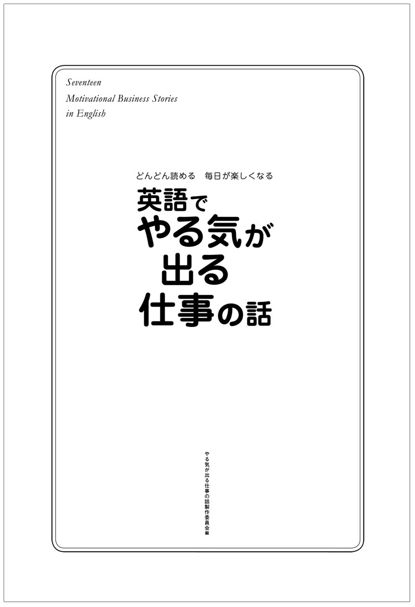
※参照項目から元の箇所に戻るには、お使いのビューワーの仕様に従ってください。または一旦目次を表示し、戻りたい箇所の近くの見出しをタップして戻ってください。
Foreword
はじめに
「興味深い内容で、最後まで読み通せるリーディング教材になかなか出合えない」、「英語の多読に興味はあるけれど、自分のレベルに合う本を見つけるのが難しい」──そんな悩みを解決するのが、「ちょっといい話」シリーズです。本書『英語でやる気が出る仕事の話』は、その中で仕事編となる１冊です。
本書には、アメリカ・日本からインド・ネパールなどの発展途上国まで、さまざまな国を舞台にした17編を収録しています。内容は、世界的な大ヒット商品の誕生秘話から、発展途上国の子どもたちへの支援事業まで、幅広いものになっています。いずれも実話を基にリライトされた話です。
それぞれのストーリーは、アルクの「標準語彙水準 SVL 12000」（SVL [Standard Vocabulary List] 12000）に基づき、初級3000語レベルの英単語を中心に書かれています。やさしい単語と基本的な構文がベースになっているので、英語でダイレクトに内容を味わうことができます。また、少し難しめの単語や固有名詞には語注が付いているので、スムーズに読み進むことができます。
無料でダウンロードできる音声には、物語本文の英文全てが収録されています。音読のお手本として、また、リスニング、リピーティング、シャドーイングなどを通じて、「聞く」「話す」力を伸ばす教材としてもご活用いただけます。さらにダウンロード特典をご利用いただくと「このストーリーのポイント」部分の音声に加え、本書未収録の物語３編もお楽しみいただけます。
収録したお話は、いずれも前向きな気持ちで仕事を見つめ直すようなものばかり。本書を通じて、「英語でダイレクトに内容を理解できた喜び」「読み切った達成感」を感じていただき、多読へのモチベーションとしていただければ幸いです。
アルク 英語出版編集部 やる気が出る仕事の話製作委員会
Contents
目 次
音声ファイルのダウンロードと再生方法、無料特典ダウンロードについて
ダウンロード特典でお話をもう3編読むことができます（詳細はこちら）。
How to use this book
本書の構成と使い方
本書は、アメリカ・日本からインド・ネパールなどの発展途上国まで、さまざまな国を舞台にした「やる気が出る仕事の話」を計17編収録しています。
無料ダウンロード音声トラック番号
それぞれのストーリーの英語音声が無料でダウンロードできます。
ストーリーのキーワード
ストーリーのタイトル
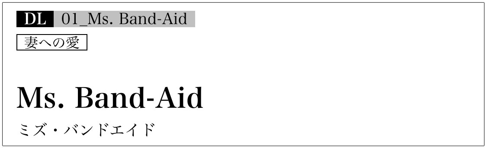
リード文
ストーリーの概要を押さえましょう。
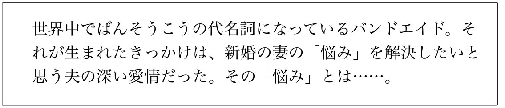
英文
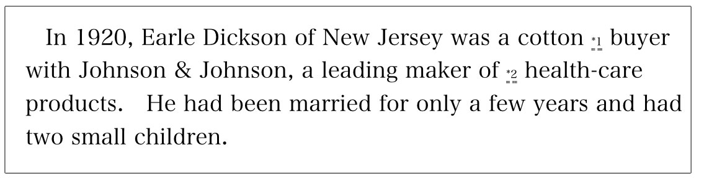
ストーリーの語数
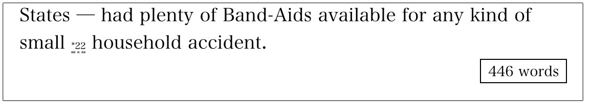
一話当たりの単語数です。リーディング教材として利用する際の参考にしてください。
このストーリーのポイント
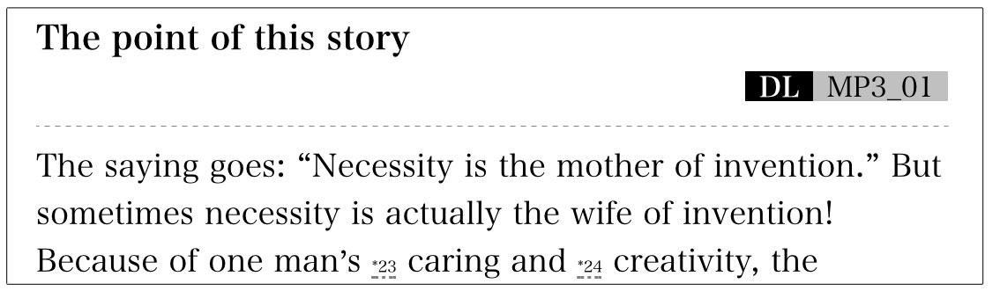
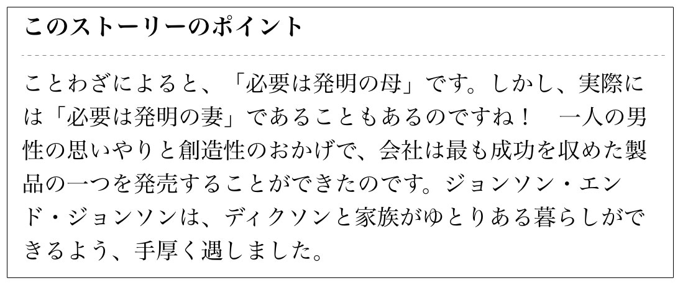
それぞれの話のポイントが書かれています。
一つの意見として読んでみてください。
なお、この部分の音声はダウンロードすることでお聞きいただけます（こちら参照）。
日本語訳
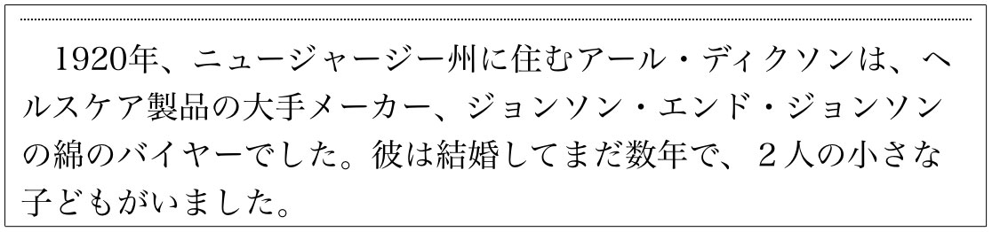
英文が難しく感じられたら、日本語訳を参照してみましょう。
語注
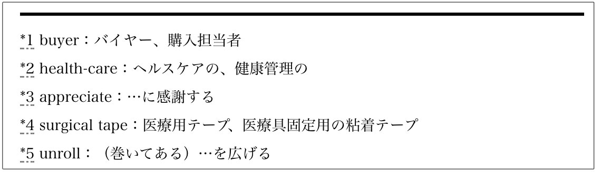
お話の英文は、アルクの「標準語彙水準SVL12000」 * の初級3000語レベルの語彙をベースに書かれています。また、固有名詞や難しいと思われる単語には語注を付け、スムーズに読み進められるよう構成しています。
* 「標準語彙水準SVL12000」とは、日本人の英語学習者にとって有用な英単語1万2000語を選び出し、12のレベルに区分した語彙リストです。
物語は、「思いやりが実った話」、「失敗が成功の基になった話」、「逆境を克服した話」、そして「自分の仕事が輝く話」の４つのカテゴリーに分けられ、収録されています。
なお、本書は無料で音声をダウンロードしていただけます。音声を参考に音読、リピーティング、シャドーイング用教材として活用したり、音声のみでリスニング教材として利用するなど、リーディング以外の用途にも幅広くお使いいただけます。
音声ファイルのダウンロードと再生方法、
ダウンロード特典について
※PC専用のサイトです。まずはこちらにアクセス！
アルク ダウンロードセンター
http://www.alc.co.jp/dl/
(2015年12月時点の情報。今後詳細が変更になる可能性があります）
「アルク ダウンロードセンター」にアクセス、電子書籍版『英語でやる気が出る仕事の話』をクリック。
お申し込みフォームに必要事項をご記入の上送信していただくと、ご登録いただいたメールアドレスに「ダウンロードページURL」の案内が届きます。
メールの本文に記載されているURLにアクセスして、圧縮ファイルをダウンロードしてください。
◆ ダウンロード音声ファイルについて
PCにダウンロードした圧縮ファイルを解凍ソフトで展開の上、iTunesなどの音声再生ソフトで取り込んでご利用ください。音声再生ソフトでのファイルの取り込み方法や携帯音楽プレーヤーでの利用方法については、ソフトやプレーヤーに付属するマニュアルでご確認ください。
音声ファイルは、音声再生ソフトで次のように表示されます。
出版社名（アーティスト名）：「ALC PRESS INC.」と表示
書名（アルバム名）：『英語でやる気が出る仕事の話』
ダウンロードした音声はトラック番号が表示されます。
本書では、ダウンロードした音声を使用する部分はDL01_Ms. Band-Aid のように、ダウンロードした音声のトラック番号に対応しています。該当のトラックを再生して学習してください。
◆ ダウンロード特典について
本書ご購入の方限定のダウンロード特典をご用意いたしました。
ぜひ学習にご活用ください。
「このストーリーのポイント」ダウンロード音声
本書掲載の「このストーリーのポイント」の英文音声です。ストーリー音声と併せてお楽しみください。なお、本書では、本文中のダウンロード音声ファイルについて、次のように表示しています。
トラック01の場合：DLMP3_01
「本書未収録の物語3編」ダウンロードテキスト＆音声
英文本文＋日本語訳（PDF形式）と英文音声（MP3形式）をダウンロードできます。「やる気が出る仕事の話」をもう3編楽しめます。
◯Revolutionary Mompreneurs（業界を変えた起業家ママ）
Revolutionary Mompreneurs_text.pdf（テキスト・イラスト付き）
DLMP3_18_1（本文音声）
DLMP3_18_2（このストーリーのポイント音声）
◯Apollo Hospitals（アポロ病院）
Apollo Hospitals_text.pdf（テキスト・イラスト付き）
DLMP3_19_1（本文音声）
DLMP3_19_2（このストーリーのポイント音声）
◯The World of Fine Coffee（おいしいコーヒーの世界）
The World of Fine Coffee_text.pdf（テキスト・イラスト付き）
DLMP3_20_1（本文音声）
DLMP3_20_2（このストーリーのポイント音声）
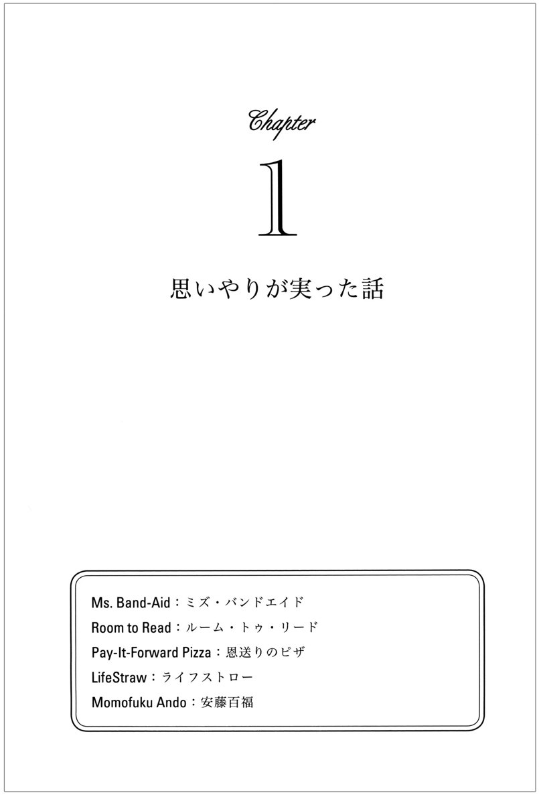
DL01_Ms. Band-Aid
妻への愛
Ms. Band-Aid
ミズ・バンドエイド
世界中でばんそうこうの代名詞になっているバンドエイド。それが生まれたきっかけは、新婚の妻の「悩み」を解決したいと思う夫の深い愛情だった。その「悩み」とは......。
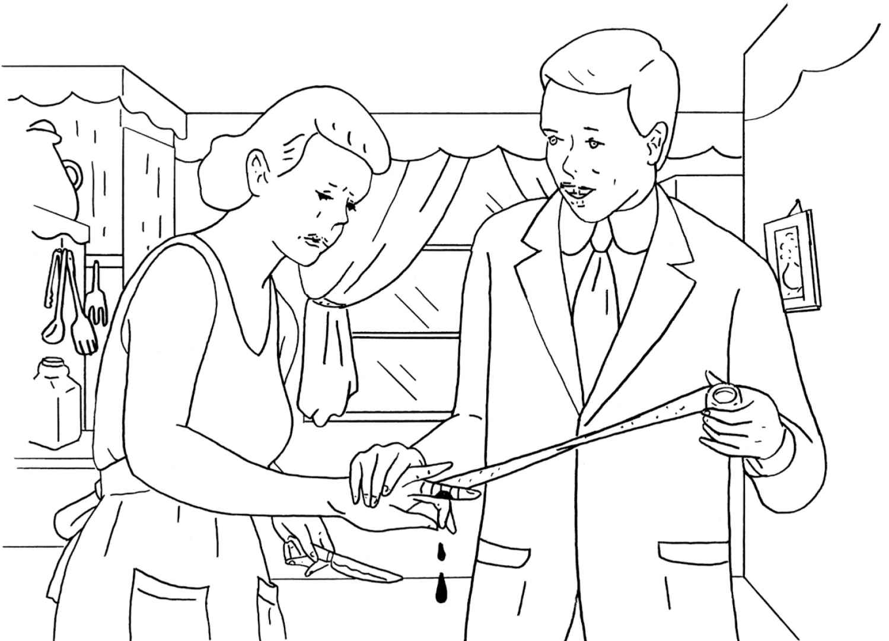
In 1920, Earle Dickson of New Jersey was a cotton*1 buyer with Johnson & Johnson, a leading maker of*2 health-care products. He had been married for only a few years and had two small children.
Dickson*3 appreciated his wife's efforts to keep the house clean and make a nice dinner for him every night. He felt bad knowing that she often got small burns or cuts while cooking or cleaning. One day he took a roll of*4 surgical tape,*5 unrolled it, and placed small sections of*6 sterile gauze all along the center. He then placed a piece of cloth all along the tape and the gauze, to keep the tape from sticking. His idea was that his wife could tear off a small*7 strip ─ she could basically make her own Band-Aid ─ whenever she needed it.
When he described his invention to several*8 co-workers, one of them said that he should tell the company's management about it.
When Dickson showed company president James Johnson how easily the*9 bandage could be put on, Johnson thought it was a great idea. The first rolls of Band-Aids were made soon afterward, entirely by hand. Each roll measured 2 1/2 inches wide by 18 inches long. The product was not very successful that first year, earning the company just $3,000 in sales.
But a few years later Johnson & Johnson*10 resized the product, making the Band-Aids three-quarters of an inch wide and three inches long, and added a little red string to pull open the paper*11 wrapper. Sales*12 skyrocketed.
The company also started to make other sizes, and to place holes in the tape, to let air in. In 1939 Band-Aids were made completely sterile. A Band-Aid printed with*13 cartoon characters came out in 1951, and one that used clear tape in 1958. But the best marketing decision of all came during World War II, when the company*14 donated large quantities of free Band-Aids to Boy Scouts throughout the country and gave*15 unlimited supplies to the U.S. Army.
Soon the brand was so successful that people started to use the name "Band-Aid" ─ even though it was*16 trademarked ─ to mean any*17 adhesive bandage, not just those made by Johnson & Johnson. Johnson & Johnson has now made more than 100*18 billion Band-Aids.
Dickson had simply turned over his idea to the company without receiving any money for it, but he didn't go away completely*19 empty-handed: He was given promotion after promotion and quickly climbed the*20 corporate ladder. He later became*21 vice president.
By that time his wife ─ like everyone else in the United States ─ had plenty of Band-Aids available for any kind of small*22 household accident.
446 words
The point of this story
DLMP3_01
The saying goes: "Necessity is the mother of invention." But sometimes necessity is actually the wife of invention! Because of one man's*23 caring and*24 creativity, the company was able to launch a product that would become one of its most successful. In turn, Johnson & Johnson took good care of Dickson and his family, allowing them to enjoy a very comfortable lifestyle.
1920年、ニュージャージー州に住むアール・ディクソンは、ヘルスケア製品の大手メーカー、ジョンソン・エンド・ジョンソンの綿のバイヤーでした。彼は結婚してまだ数年で、２人の小さな子どもがいました。
ディクソンは、家をきれいに保ち、彼に毎晩おいしい夕飯を作ってくれる妻の努力に感謝していました。料理や掃除の際に妻がよく小さなやけどや切り傷を負っていると知って、彼は申し訳なく思いました。ある日、彼は医療用テープをひと巻取り出し、それを広げて、中心線に沿って滅菌ガーゼの小片を並べていきました。それから、テープがくっついてしまわないよう、テープとガーゼ全体に布を１枚当てました。彼の思い付きは、妻が必要なときにいつでも、小さな長方形部分を切り取れるようにすること、要するに、彼女専用のバンドエイドを作れるようにすることでした。
彼が自分の発明を何人かの同僚に説明したところ、そのうちの一人が、それについて会社の経営陣に話した方がいいと助言しました。
ディクソンがジェームズ・ジョンソン社長に、そのばんそうこうが、いかに簡単に貼れるかを見せたところ、ジョンソン社長は素晴らしいアイデアだと考えました。その後間もなく、最初のロールタイプのバンドエイドが、全て手作業で作られました。１巻は、幅2.5インチ（約6.4センチメートル）、長さ18インチ（約45.7センチメートル）の大きさでした。最初の年、商品はあまり成功せず、会社に3,000ドルの売上をもたらしただけでした。
しかし数年後、ジョンソン・エンド・ジョンソンは商品サイズを変更、バンドエイドの幅を４分の３インチ（約1.9センチメートル）、長さを３インチ（約7.6センチメートル）とし、包装紙を引き開けるための小さな赤い糸も付けました。売上は急上昇しました。
同社は他のサイズも作り始め、テープに空気を通す穴を開けました。1939年、バンドエイドは完全滅菌になりました。漫画のキャラクターの付いたバンドエイドが1951年に、透明テープを使ったものが1958年に発売されました。しかし、販売戦略上最高の決断は第２次世界大戦中に下されました。そのとき同社は、全米のボーイスカウトに大量のバンドエイドを無料で寄付し、米陸軍に無制限の供給を行いました。
やがて、このブランドがあまりに成功したため、商標登録されているにもかかわらず、人々は「バンドエイド」という名前を、ジョンソン・エンド・ジョンソン製のものに限らず、どんな粘着性のばんそうこうにも使うようになりました。これまでに、ジョンソン・エンド・ジョンソンは1,000億枚以上のバンドエイドを製造しています。
ディクソンは自分のアイデアを会社に譲り渡しただけで、それに対するお金は一切受け取っていませんが、全く何も得ずに終わったわけではありません。彼は昇進に次ぐ昇進を重ねて、とんとん拍子に出世しました。後に、彼は副社長になりました。
そのころまでには、彼の妻はアメリカの皆と同様、家庭内のあらゆる種類の小さな事故用のバンドエイドを、たっぷり手元に置いていました。
このストーリーのポイント
ことわざによると、「必要は発明の母」です。しかし、実際には「必要は発明の妻」であることもあるのですね！ 一人の男性の思いやりと創造性のおかげで、会社は最も成功を収めた製品の一つを発売することができたのです。ジョンソン・エンド・ジョンソンは、ディクソンと家族がゆとりある暮らしができるよう、手厚く遇しました。
*1 buyer：バイヤー、購入担当者
*2 health-care：ヘルスケアの、健康管理の
*3 appreciate：...に感謝する
*4 surgical tape：医療用テープ、医療具固定用の粘着テープ
*5 unroll：（巻いてある）...を広げる
*6 sterile gauze：滅菌ガーゼ
*7 strip：細長い一切れ
*8 co-worker：仕事仲間、同僚
*9 bandage：包帯、ばんそうこう
*10 resize：...のサイズを変更する
*11 wrapper：包装紙
*12 skyrocket：飛躍的に上昇する、急増する
*13 cartoon：漫画、アニメーション
*14 donate：...を寄付する
*15 unlimited：無制限の
*16 trademark：...を商標登録する
*17 adhesive：粘着性の
*18 billion：10億の
*19 empty-handed：手ぶらで、何も手にせずに
*20 corporate ladder：出世の階段
*21 vice president：副社長
*22 household：家族の、家庭の
*23 caring：世話、思いやり
*24 creativity：創造性
DL02_Room to Read
意義のある仕事
Room to Read
ルーム・トゥ・リード
マイクロソフトの重役としてハイテク業界の最前線で活躍していたジョン・ウッドは、休暇で訪れたネパールの山奥の村で、学校の教師から一つの提案を受ける。それを実現しようとしたことで、彼の人生は、彼自身、思ってもいなかった方向へ変わり始めたのだった......。
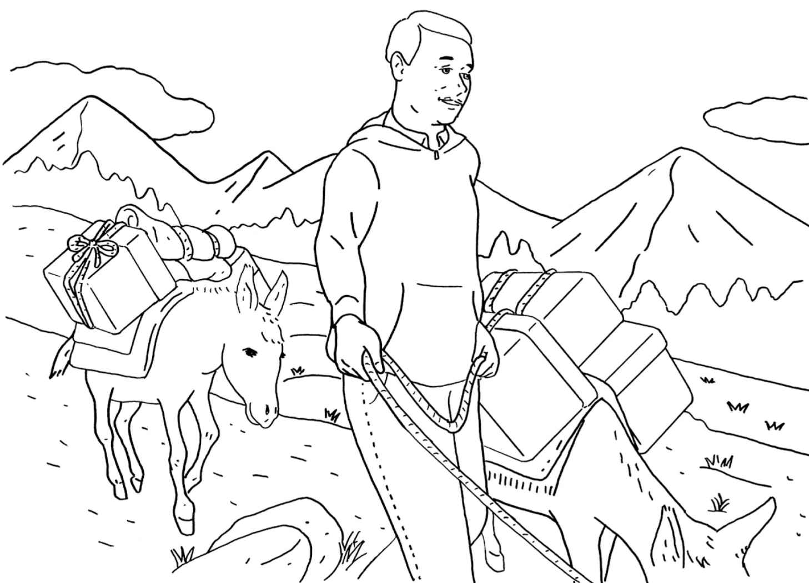
For most*1 high-tech industry*2 executives, career success means managing*3 worldwide companies, flying in a private jet, owning a yacht or giving economic advice to government leaders. Leading*4 donkeys over*5 faraway mountain paths does not usually*6 come into the picture. But for John Wood, this is how true success began.
In 1998, feeling tired of his job at Microsoft, Wood took a trip to Nepal, where he walked far into the mountains and visited some villages. At one village, he saw a school at which the children needed books badly. They only had a few travel guides and novels that tourists had given them. The local*7 schoolteacher said to John, "Perhaps, sir, you will someday come back with some books."
After his vacation, he started gathering books from friends. He soon had more than 3,000 books that could help*8 Nepalese children learn. The next year, John and his father returned to Nepal. This time, John led eight donkeys up the mountain path, carrying the books to the children of the village.
When he saw the faces of the children as they learned from and enjoyed the books, John knew that his career had changed forever. In late 1999, he left Microsoft and started Room to Read with his Nepalese partner, Dinesh Shrestha. Together, they began helping villages build schools and create libraries. In 2000, their work grew into new areas, such as helping girls in poor countries become*9 educated and successful adults.
Today, Room to Read is helping children in Vietnam, Cambodia, India, Sri Lanka, Bangladesh, Tanzania and other countries. More than 16,000 libraries and 1,850 schools have been started, and more than 14 million books have been*10 given away. In the beginning, they gathered English-language books because it was difficult to find books in local languages. Now, they also help get books printed in local languages. John's response to a simple suggestion*11 ended up changing both his life and the world.
321 words
The point of this story
DLMP3_02
Microsoft executive John Wood needed a break from work. So he went to Nepal to walk in the mountains. There, he discovered children who needed books. He went home, collected books from friends and then went back to Nepal to give them to the children there. Performing this act of kindness changed his life. He started Room to Read, which now helps millions of children all over the world receive books and education.
たいていのハイテク業界の重役にとって、キャリア上の成功が意味するものは、世界的な企業を経営したり、プライベートジェットで飛び回ったり、ヨットを所有したり、政府首脳に経済のアドバイスをしたりすることです。ロバを率いて遠い山道を越えていくことは、普通、想定内ではありません。しかし、ジョン・ウッドにとっては、これが真の成功の始まりでした。
1998年、マイクロソフトでの仕事に疲れを覚えたウッドは、ネパールを旅しました。そこで山奥に徒歩で入っていって、幾つかの村を訪ねました。ある村で、彼は、子どもたちが本を切実に必要としている学校を見掛けました。彼らが持っていたのは、旅行者がくれた数冊の旅行ガイドと小説だけでした。地元の学校教師はジョンに、「よろしかったら、いつの日か本を何冊か持って、またいらしてください」と言いました。
休暇を終えると彼は、友人たちから本を集め始めました。やがて、ネパールの子どもたちが勉強するのに役立ちそうな本が、3,000冊以上集まりました。翌年、ジョンと彼の父親はネパールを再訪しました。今度は、ジョンは８頭のロバを率いて山道を進み、村の子どもたちに本を届けました。
本で勉強し、大喜びの子どもたちの顔を見た時、ジョンは、自分の仕事が永遠に変わったのだと気付きました。1999年の終わりに、彼はマイクロソフトを退社して、ネパールのパートナー、ディネシュ・シュレスタとともにルーム・トゥ・リードを立ち上げました。彼らは一緒に、村々での学校建設と図書館創設に協力し始めました。2000年には、彼らの仕事は、貧しい国の少女たちが教育を受けて、成功した大人になるための手助けをするという、新しい分野にも発展していきました。
現在、ルーム・トゥ・リードは、ベトナム、カンボジア、インド、スリランカ、バングラデシュ、タンザニアなどの国々の子どもたちを助けています。１万6,000以上の図書館と1,850以上の学校が新設され、1,400万冊以上の本が寄贈されました。最初は、現地語の本を見つけるのが難しかったため英語の本を集めていました。今では、現地語で本を刷ることにも協力しています。（ネパールの教師の）シンプルな提案へのジョンの答えは、彼の人生と世界の両方を変えることになりました。
このストーリーのポイント
マイクロソフトの重役、ジョン・ウッドは、休暇を必要としていました。彼はネパールに行き、山歩きをすることにしました。そこで出会ったのが、本を必要とする子どもたちだったのです。自宅に戻ると、友人たちから本を集め、再びネパールに行って現地の子どもたちに渡しました。この思いやりの行動をすることが、彼の人生を変えます。彼が設立したルーム・トゥ・リードは、今では世界中の数百万人の子どもたちが本を受け取って教育を受けられるように、支援しています。
DL03_Pay-It-Forward Pizza
情けは人のためならず
Pay-It-Forward Pizza
恩送りのピザ
ニューヨークで１切れ１ドルのピザ店がはやっているのを見たメイソン・ウォートマンは、ウォール街での仕事を辞めて、故郷のフィラデルフィアで同様の店を開く。開店して数カ月、１人の客が彼にある「依頼」をしたのだった......。
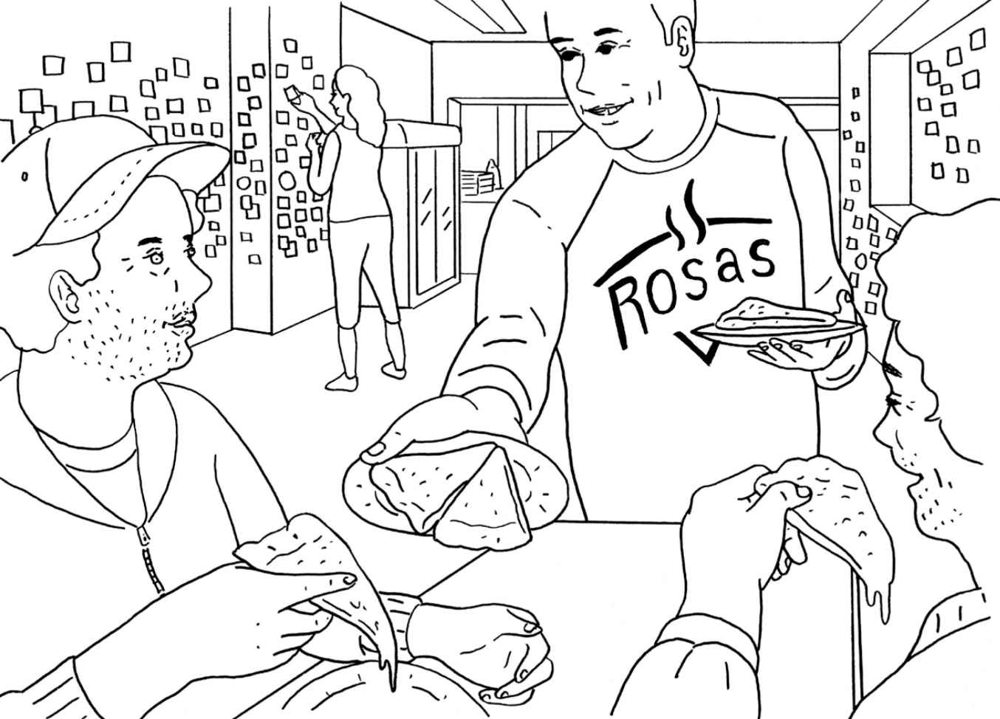
Mason Wartman, owner of Rosa's Fresh Pizza in Philadelphia, Pennsylvania, left a job on Wall Street to open a $1-a-slice pizza shop. He had seen the*1 popularity of these shops in New York City and decided to try opening one in his hometown of Philadelphia, which also just happens to be the poorest big city in the United States.
One day, a few months after the restaurant opened, a customer asked if he could*2 prepay for a slice of pizza for the next*3 homeless person who came in. Wartman*4 grabbed a*5 sticky note to*6 keep track, and he put it up on the wall.
He then bought some more sticky notes and began to tell customers about the*7 prepayment system. Many of them wanted to donate, too. People began writing their own notes of*8 encouragement and putting them up on the walls when they donated. The notes said things like "You matter," "Have faith," or "Happy pizza eating." "Now we give away 150 to 160 slices pizza a day to the homeless," he said.
Wartman says that he had heard of a similar custom in Italy, where coffee shop customers sometimes buy what they call a "*9 suspended coffee," or a cup for someone who cannot afford to pay. This sort of kindness is known as "*10 paying it forward," which means responding to an unexpected kindness that you have received by doing something kind for someone else.
Even*11 needy customers, he says, donate when they can. He tells the story of one regular, a homeless man, who had stopped showing up for a while. Wartman had begun to wonder whether the man was OK. Then the man came back in again, said that he had a job now and prepaid for a slice for someone else.
These days, the sticky notes are mostly*12 symbolic. Wartman actually keeps track of*13 donations in the*14 cash register and on a computer.
He says, "Some days we get a big donation, and some days are slow in the shop." The need, though, is*15 constant. "Our homeless customers get hungry every day," Wartman says.
So in order to get a steadier source of money to feed the homeless and also to increase sales in the store, Wartman has begun selling T-shirts and sweatshirts at Rosa's. For each shirt sold, Wartman gives one to people in need in Philadelphia. He plans to develop this program further and start to sell a wider variety of products in the store.
Wartman calls this system of prepaid slices "a way of*16 fulfilling two needs: for businesses to make money and for the hungry to eat." He hopes more businesses around the country will start similar programs, which he says could be a way to "feed a lot of people very quickly."
There's no doubt that Rosa's Fresh Pizza is having a positive effect on the city. One homeless man told Wartman that being able to eat*17 regularly helps keep some homeless out of trouble with the police. Wartman said, "I knew it saved people money. I hadn't considered that it might stop people from*18 committing crimes."
517 words
The point of this story
DLMP3_03
When restaurant owner Mason Wartman started a pizza donation system, some people might have thought that the presence of homeless customers would drive away regular customers, but in fact the result has been the opposite. Customers are happy to be able to do something good so easily. And everyone says that the program has had*19 ongoing positive effects in the city, including making people feel*20 united. Asked if he has any plans to cut out the pizza and just begin to focus on the*21 charitable work, he said*22 definitely not. "The pizza is still*23 crucial," he said. "It is by far the*24 charity most needed by our homeless customers and the program we are best at providing."
ペンシルベニア州フィラデルフィアにある「ローザのフレッシュピザ」の経営者、メイソン・ウォートマンは、１切れ１ドルのピザ店を開くため、ウォール街での仕事を辞めました。彼はこうした店のニューヨークでの人気を見て、自分の故郷のフィラデルフィアで開店しようと決めたのですが、そこは図らずもアメリカで最も貧しい大都市でもありました。
レストランの開店から数カ月たったある日、一人の客が、この次来店するホームレスのため、ピザ１切れ分を前払いしてもいいかと尋ねてきました。ウォートマンは記録しておくための付せんを取り出し、壁に張り出しました。
彼はそれから付せんを買い足して、この先払いシステムについて客に説明し始めました。客の多くが、同じように寄付したいと望みました。人々は寄付する時、自ら励ましの一言を書いて壁に張るようになりました。たとえば「あなたには価値がある」、「信念を持って」、「楽しくピザを召し上がれ」といったことが書かれていました。「現在、私たちは１日150から160切れのピザをホームレスに無料で提供しています」と彼は言います。
ウォートマンは、イタリアの同じような習慣を聞いたことがあったと言います。そこではコーヒー店の客が時々、「保留コーヒー」と呼ばれる、代金を払えない人のためのコーヒー代を払うことがあるのです。こうした種類の親切は「恩送り」として知られ、自分が受けた思いがけない親切を、別の人に親切にすることで返すことを意味します。
困窮している客でさえ、できるときには寄付をすると、彼は言います。彼は、常連のホームレスの男性で、しばらく姿を見せなくなった人の話をしてくれます。ウォートマンはその男性が無事かどうか心配になってきました。すると男性がまた現れて、今は仕事に就いたからと言って、他の人のための１切れの前払いをしたのです。
最近では、付せんは、ほとんど象徴的なものになっています。ウォートマンは寄付の記録を、実際にはレジとコンピューターで付けているのです。
「大金が寄付される日もあれば、店に人があまり来ない日もあります」と彼は言います。しかし、需要は一定です。「ホームレスのお客さんは毎日おなかがすくのですから」とウォートマンは言います。
そこで、ホームレスに食事を出すためのより安定した収入源を確保し、店の売上も増やすために、ウォートマンはローザ（のフレッシュピザ）でTシャツとスエットシャツを売り始めました。シャツが１枚売れるごとに、ウォートマンはフィラデルフィア市内の困窮している人に（シャツを）１枚を寄付します。彼はこのプログラムをさらに展開し、もっと幅広い種類の商品を店で売る計画を立てています。
ウォートマンはこの前払いピザのシステムを、「事業でお金を稼ぐことと、おなかのすいた人が食事をすることの、２つの必要を満たすための方策」と呼びます。彼は、全国でもっと多くの企業が同じようなプログラムを始めてくれることを願っています。そうすれば、「たくさんの人に迅速に食事をしてもらう」手段になりうるだろうと彼は言います。
ローザのフレッシュピザが町に良い影響を与えていることは間違いありません。あるホームレスの男性はウォートマンに、定期的に食事ができるおかげで、一部のホームレスは警察の厄介にならずに済んでいると話してくれました。ウォートマンは、「これにより人々がお金をかけずに済むのは分かってました。それが犯罪への関与を食い止めることになるとは、思ってもいませんでした」と語りました。
このストーリーのポイント
レストランオーナーのメイソン・ウォートマンがピザを寄付するシステムを始めた時、ホームレスのお客さんの存在が、常連客を遠ざけてしまうのではと懸念した人もいたかもしれません。でも実際には、結果はそれとは反対でした。こんなにも簡単に良いことができると、お客さんは喜んでいます。そして皆が、このプログラムは、例えば人々に一体感が生まれるなど、町にプラスの影響を与え続けていると述べています。ピザの仕事を辞めて慈善事業に専念する計画はあるのかと聞かれて、ワートマンはそれはないと断言しました。「ピザはやはり重要なんです。それはホームレスのお客さんが飛び抜けて一番必要としているものであり、うちが提供できる最高のプログラムですから」。
*1 popularity：人気
*2 prepay：...を前払いする
*3 homeless：ホームレスの、住む家のない
*4 grab：...を素早く手に取る
*5 sticky note：付せん
*6 keep track：記録を付ける
*7 prepayment：前払い
*8 encouragement：励まし
*9 suspended：保留にした（ここでは、支払いはしておくが、商品を出すのは保留にしておくという意味）
*10 pay it forward：恩送り
*11 needy：困窮している、貧しい
*12 symbolic：シンボルとしての、象徴的な
*13 donation：寄付、寄付金
*14 cash register：金銭登録機、レジ
*15 constant：一定の、不変の
*16 fulfill：...を満たす、...をかなえる
*17 regularly：定期的に
*18 commit：...（罪）を犯す、...（悪事）をはたらく
*19 ongoing：継続中の、現在進行中の
*20 united：団結した、協力した
*21 charitable：慈善の
*22 definitely：断固として、絶対に
*23 crucial：非常に重要な
*24 charity：慈善
DL04_LifeStraw
社会貢献
LifeStraw
ライフストロー
高校を卒業してナイジェリアに渡ったミケル・ベスタガード・フランドセンは、商売で稼ぐ一方、貧困により死んでいく子どもたちの存在に気づく。帰国して家業の織物会社で働き始めた彼は、自分の会社で作っているものを活用して、子どもたちを救えないかと考え......。
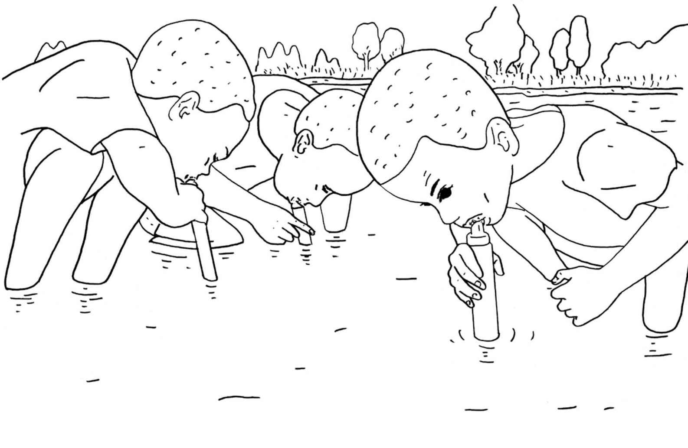
When Mikkel Vestergaard Frandsen was 19, he left his high school in Denmark and traveled to Nigeria. He soon began importing used clothing and truck parts into Nigeria. His main purpose was to make money, and he did quite well. But his experience in Nigeria touched his heart in ways that changed his career and would change the lives of many others for the better.
In Nigeria, Frandsen got a close look at the suffering that*1 poverty causes. He saw that children suffer and die every day from diseases that are not big problems in rich countries. In the*2 developing countries, many children die because the water they drink is not clean and makes them sick. Mosquitoes also carry*3 deadly diseases. Frandsen realized that much suffering could be prevented with very simple things like*4 water filters and mosquito nets.
After a year in Nigeria, Frandsen went home in 1992 and began working at his family's*5 textile business. But he saw the business in a new way now. He found that his family's company could make things that helped save lives in poor countries. Within a year, it began making blankets and tents for aid workers in poor countries. Then, Frandsen had the company make mosquito nets ─ a simple item that saves lives.
But Frandsen wanted to do even more. There must be a way, he thought, to help people in developing countries get clean drinking water. He began working with The Carter Center in the United States, a*6 human rights organization, and a new idea was created. Children in Nigeria often drank*7 unclean water from streams and ponds.*8 What if a drinking straw could filter that water?
The result was LifeStraw, a water filter about the size of a karaoke microphone. When someone sucks water through it, filters get rid of almost all the*9 harmful*10 bacteria and*11 viruses. Frandsen had his family's company develop and make the new product, which has become a great success. It's so cheap, easy to use and effective that it has won several awards, including the 2008 Saatchi & Saatchi Award for World Changing Ideas.
Aid groups also are buying hundreds of thousands of LifeStraws for people who face danger from diseases and*12 disasters. Two factories now make LifeStraws, and they are working 24 hours a day to fill the many orders from groups that help people in developing countries.
396 words
The point of this story
DLMP3_04
Mikkel Vestergaard Frandsen went to Nigeria to make money. But the suffering he saw there touched his heart. He then*13 dedicated his career to reducing suffering in developing countries. He found that simple everyday items like mosquito nets and water filters could help save lives. His most famous product is LifeStraw, a small water-filter drinking straw that has saved the lives of many people with no clean water to drink.
ミケル・ベスタガード・フランドセンは19歳でデンマークの高校を卒業し、ナイジェリアへ旅に出ました。ほどなくして彼は、古着やトラックの部品をナイジェリアに輸入する商売を始めました。主たる目的はお金を稼ぐことでしたが、かなりうまくいきました。しかし、ナイジェリアでの体験は彼の心に、自身のキャリアばかりでなく、他の多くの人々の生活をより良い方向へと変えていく形で、影響を与えたのです。
フランドセンはナイジェリアで、貧困がもたらす苦しみを間近に見ました。豊かな国々ではさして問題にならない病気のせいで、子どもたちが日々、苦しんで死ぬのを目の当たりにしました。発展途上国では、きれいでない水を飲むことで病気になり、多くの子どもが死んでしまいます。また、蚊が致命的な病気を運びます。フランドセンはそうした苦しみの多くが、浄水器や蚊帳など、ごくシンプルなもので防げることに気づきました。
ナイジェリアでの１年の後、フランドセンは1992年に帰国し、家業の織物会社で働き始めました。ところが、その事業に対し、今や新しい見方をするようになっていました。自分の家業の会社が、貧しい国々の命を救うために役立つものを作ることができると気付いたのです。１年のうちに、貧しい国々の援助活動家向けの毛布やテントの製造を開始しました。それからフランドセンが会社に作らせたのは蚊帳──命を救うシンプルなアイテムでした。
しかし、フランドセンは、さらにもっと役立つことをしたかったのです。発展途上国の人々がきれいな飲み水を手に入れるのを手助けする方法があるはずだと考えました。米国の人権団体、カーターセンターと協力し始めたところ、新しいアイデアが生まれました。ナイジェリアの子どもたちは、よく川や池から汚れた水を飲んでいました。その水をストローで浄化できるようにしたらどうだろう？
こうして生まれたのがライフストローという、カラオケマイクほどの大きさの浄水器です。それを通して水を吸うと、フィルターが有害なバクテリアやウィルスのほぼすべてを除去します。フランドセンは家業の会社にこの新製品を開発製造させた結果、製品は大きな成功を収めました。非常に安価で簡単に使え、かつ効果があることが認められ、2008年度サーチアンドサーチ 世界を変えるアイデア賞をはじめ、いくつかの賞を受賞しました。
疾病や災害の危機に直面する人々のために、援助団体も何十万本ものライフストローを購入しています。今や２つの工場でライフストローを24時間稼働して生産し、発展途上国の人々を援助する団体からの、大量の注文に応えています。
このストーリーのポイント
ミケル・ベスタガード・フランドセンがナイジェリアに行ったのは、お金を稼ぐためでした。しかしそこで見た苦しみは、彼の心を打ちました。その後フランドセンは、自らのキャリアを発展途上国の苦しみを和らげることに捧げました。蚊帳や浄水器のようなシンプルな日用品で、命が救えることに気付いたのです。フランドセンの最も著名な製品であるライフストローは、ストロー型の小さな浄水器で、きれいな飲み水のない地域に住む多くの人々の命を救っています。
DL05_Momofuku Ando
夢の実現
Momofuku Ando
安藤百福
世界で毎年、1,000億食以上食べられているインスタントラーメン。安藤百福がその発明を思い立ったのは、戦後の食糧不足の中でだった。安くておいしいラーメンをたくさん食べさせて、世界を平和にする。しかし、その夢の実現は一本道ではなかった......。
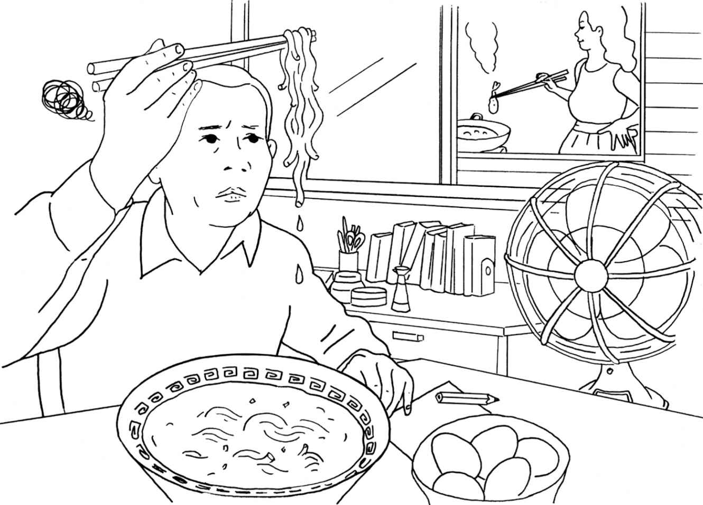
The suffering that Momofuku Ando saw in the days after World War II left a deep impression on him. Living in Osaka, Japan, he owned a factory and two office buildings, which were destroyed in the war. Ando walked through the city one day in 1945, thinking about what to do next. He saw a long line of hungry people at a ramen*1 noodle stand, waiting for something to eat. Ando wished he could give them all noodles. He wished he could feed all of Japan, and even the world, with this delicious Japanese comfort food.
Ando began working as a banker.*2 Food shortages continued in Japan, and he continued thinking about feeding everyone with ramen. In 1957, his bank failed, leaving him with a feeling of disappointment. But failure*3 focused his mind on doing good. He returned to his dream of feeding every hungry person with delicious ramen noodles. He developed the belief that world peace will come when everyone has enough to eat.
Ando began trying to invent*4 tasty instant ramen that could be*5 mass-produced, that would not spoil, and that only needed hot water. It wasn't easy, and he had many failures. Drying the noodles always ruined their*6 texture. Then one day,*7 out of ideas, he put some noodles into the hot oil his wife was using for dinner. He discovered that frying the noodles worked. It dried them in such a way that they would not spoil, and could be enjoyed days later by adding hot water. The texture and taste were good, too. Ando was closer to realizing his dream.
His first product, Chikin Ramen (Chicken Ramen), came to stores in 1958. Although it was expensive, people liked it. It became cheaper and more popular all over Japan. After this success, Ando took instant ramen to the world. Every time he faced a problem, he solved it with fresh ideas. In the United States, the noodles were made shorter for easier eating with a fork. And Ando developed a convenient*8 Styrofoam cup*9 container to keep "Cup O'Noodles" (now "Cup Noodles") warm.
Ando's company, Nissin, is now a*10 worldwide food industry*11 powerhouse. People eat nearly 100*12 billion packages of ramen a year in the world. Ando's products have even gone beyond Earth, feeding*13 astronaut Soichi Noguchi, who gave the*14 eulogy at Ando's funeral in 2007.
Ando's story shows us that success means more than just beating the competition. Every time he failed, Ando turned his disappointment and*15 sadness into something positive.
Ando realized his dream of giving ramen to the world. But he also taught us that if we work hard and follow our dreams, we can turn failure into success.
443 words
The point of this story
DLMP3_05
Where most people would see only*16 tragedy, Momofuku Ando saw hope. When he saw hungry, defeated people, he dreamed of feeding them to help them*17 rebuild Japan. When his own career failed, he chose to follow his dream. He showed us that no matter how bad the situation becomes, we always have opportunities.
第２次世界大戦直後の日々に目にした人々の苦しみは、安藤百福の心に深く刻まれました。日本の大阪に住んでいた安藤は、工場と２つのオフィスビルを所有していましたが、戦争で破壊されました。（戦争の終わった）1945年のある日、安藤は大阪市内を歩きながら、これから何をすべきか考えていました。その時、おなかをすかせた人々が、ラーメン屋の屋台で何か食べようと長い行列を作っているのが目に入りました。安藤はこの人たちにありったけのラーメンを食べさせてあげたいと思いました。日本全国、いや世界にも、この元気をもたらすおいしい日本の食べ物を与えられたらと願ったのです。
安藤は金融機関の役員として働き始めました。日本の食糧不足は続き、安藤はラーメンをみんなに食べさせることを考え続けました。1957年、勤めていた金融機関が破綻して、安藤は失望感を味わいます。しかしその失敗が、彼の気持ちを良い行いをすることに集中させたのです。安藤は、おなかをすかせた全ての人においしいラーメンを食べさせるという夢に立ち返りました。みんなに食べ物が十分行き渡れば、世界に平和が訪れると信じるようになったのです。
安藤は大量生産ができて、腐らなくて、熱湯だけで作ることができるおいしいインスタントラーメンの発明に着手しました。それは容易なことではなく、多くの失敗を伴いました。麺を乾燥させると、どうしても食感が損なわれます。行き詰まったある日、妻が夕食の支度に使っていた熱い油に麺を入れてみました。すると麺を揚げるのがうまくいくことがわかったのです。油で揚げて乾燥した麺は腐ることもなく、日が経っても熱湯を加えると食べられます。食感や味も良好でした。安藤は夢の実現にぐっと近づきました。
安藤の最初の製品「チキンラーメン」が店頭に並んだのは、1958年のことです。当時は高価でしたが、人々は気に入りました。やがて値段も下がり、日本全国でさらに人気が出ました。この成功を受けて、安藤はインスタントラーメンを世界に送り出しました。何か問題に直面するたびに、斬新なアイデアで解決しました。米国では、フォークで食べやすいように麺を短くしました。安藤はまた、「Cup O'Noodles」（現在の「Cup Noodles」）が冷めないよう、便利な発泡スチロール製のカップ型容器を開発しました。
安藤の会社である日清食品は、今や世界規模の強力な食品業界の企業となりました。世界で年間1,000億食ものインスタントラーメンが食べられています。また、安藤の製品は地球を超えて、野口聡一宇宙飛行士の宇宙食にもなりました。2007年の安藤の葬儀では、野口が弔辞を述べました。
安藤の物語は、成功には単に競争に打ち勝つこと以上の意味があることを教えてくれます。彼は失敗するたびに、その失望や悲しみを前向きな行動に変えました。
安藤はラーメンを世界に提供する夢を実現しました。そして私たちに、夢に向かって一生懸命努力すれば、失敗を成功に変えられることも、教えてくれたのです。
このストーリーのポイント
安藤百福は、ほとんどの人が悲劇しか見ないところに、希望を見い出しました。敗戦後の飢えた人々を目にした時に安藤が夢見たのは、彼らに食物を与えて、日本を再建する一助になりたいということでした。仕事で挫折した時に、彼は夢を追う道を選びました。安藤はどんなに状況が悪くなろうと、常に好機があることを教えてくれたのです。
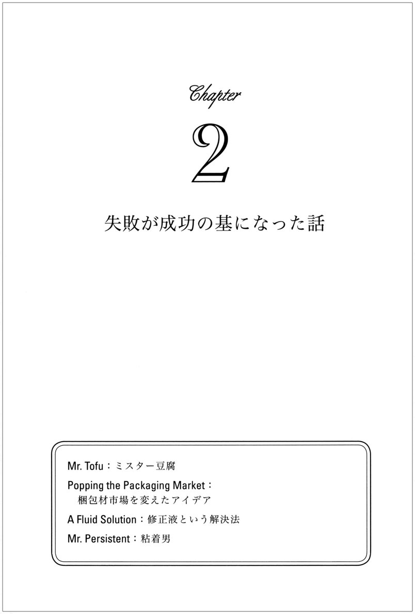
DL06_Mr. Tofu
信念と熱意
Mr. Tofu
ミスター豆腐
かつてアメリカ人が最も嫌いな食べ物に選ばれたこともある豆腐。それが健康食品として広く受け入れられるようになるまでには、「ミスター豆腐」と呼ばれるある日本人の悪戦苦闘があった......。
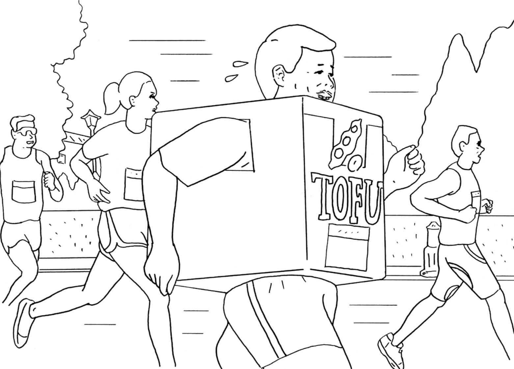
If anyone should be called "Mr. Tofu" in the United States, it's Yasuo Kumoda, the man who made tofu popular there. Although he succeeded in the end, Kumoda's career was filled with bad luck that would have crushed the spirits of most people.*1 Time and again, his great ideas came close to success*2 only to be ruined by unexpected events.
At age 40, in the early 1980s, Kumoda was sent to the United States to try to sell*3 Morinaga tofu there. Surely Japanese*4 expats and*5 health-conscious Americans would eat tofu. Some Americans did like it, but not many. Some didn't like the feel and taste of it. The word "tofu" reminded others of the toes on their feet. Many also thought*6 soy was only for pet food. In 1988, a newspaper*7 survey found that tofu was the one food Americans disliked most.
Year after year, Mr. Tofu kept trying. He visited Rocky Aoki, the owner of the Benihana restaurant chain. But Aoki refused to let Kumoda use the Benihana name as a tofu brand, or to offer tofu in his restaurants. Kumoda's next idea was to put "TOFU NO1" on his car*8 license plate. But a*9 consultant told him that Americans might take it to mean "TOFU NO!" Instead, he used "TOFU-A." Still, other drivers on the road sometimes gave him the "*10 thumbs down" sign.
He ran in the L.A.*11 Marathon dressed as a block of tofu. He got some attention on TV when he tripped and fell. But bad luck and*12 barriers to success kept his tofu sales from taking off.
Then one day, when he was close to giving up, he saw a woman buying tofu. Kumoda spoke to her and found that she mixed it with fruit to make a healthy shake. He began developing new tofu products based on this fresh new idea. Later, he heard first lady Hillary Clinton talk about tofu as a healthy food for President Bill Clinton. Kumoda sent some of his new product to the White House and received a kind reply.
This*13 renewed Kumoda's*14 enthusiasm. But just then, Morinaga's patience*15 ran out. The company told him he could build a factory for his new products, but he would have to pay for it himself. This was a big personal risk, and many people would have given up. But not Mr. Tofu. He borrowed money to build a factory in Oregon. After 10 more years of struggle, this bold move finally paid off ─ Mr. Tofu's reward for never giving up. Today, Morinaga tofu is selling well in the United States.
There's a*16 common Japanese saying: "Peach and*17 chestnut trees take three years to bear fruit,*18 persimmons take eight," to which Kumoda adds, "And tofu takes 10!"
456 words
The point of this story
DLMP3_06
This is a story about believing. Yasuo Kumoda really believed that tofu could be a successful product in the United States. Year after year, the facts seemed to prove him wrong. But he knew in his heart that success was possible. When most people would have given up, he took his biggest risk and continued the struggle for 10 more years. Success was Mr. Tofu's sweet reward.
アメリカで「ミスター豆腐」と呼ばれるべき人がいるとしたら、それは、かの地で豆腐人気を高めた雲田康夫さんです。最終的に成功したものの、雲田さんの道のりは、たいていの人なら精神がくじかれるような不運だらけでした。彼の名案は成功に近づいては、予想外の出来事によって、幾度となく台無しになってしまいました。
1980年代初め、40歳だった雲田さんは、森永（乳業）の豆腐を販売するためアメリカに派遣されました。もちろん、日本からの駐在員や健康志向のアメリカ人なら豆腐を食べたでしょう。アメリカ人にも好む人はいましたが、多くはありませんでした。その食感と味を好まない人がいたのです。"tofu" という言葉から足のつま先（toe）を連想する人もいました。また、大豆はペット用の食品でしかないと思っていた人も大勢いました。1988年のある新聞調査では、豆腐はアメリカ人が最も嫌いな食べ物だということが明らかになりました。
何年も、ミスター豆腐は努力し続けました。彼は、レストランチェーン、ベニハナの経営者であるロッキー青木氏を訪ねました。しかし、青木氏は、雲田さんに豆腐のブランドに「ベニハナ」の名前を使うことも、自分のレストランで豆腐を出すことも断りました。雲田さんの次のアイデアは、自分の車のナンバープレートに "TOFU NO1" と付けることでした。しかし、コンサルタントから、アメリカ人はそれを "TOFU NO!" という意味に取るかもしれないと言われました。代わりに彼は "TOFU-A" を使いました。それでも、路上の他のドライバーたちから、親指を下に向けるしぐさで拒否されることがありました。
彼は、四角い豆腐のコスチュームでロサンゼルスマラソンを走りました。つまずいて転んだときにはテレビで少し注目されました。けれど、不運と、成功を阻む壁のせいで、豆腐の売上は伸び悩みました。
そんなある日、諦めかけていた彼は、１人の女性が豆腐を買うのを見掛けました。雲田さんは女性に話し掛けて、彼女が豆腐と果物を混ぜて健康に良いシェイクを作るのだと知りました。彼はこの斬新なアイデアに基づいた、新しい豆腐製品の開発を始めました。その後彼は、ファーストレディーのヒラリー・クリントンが、ビル・クリントン大統領のための健康食品として豆腐を話題にするのを耳にしました。雲田さんは新製品を幾つかホワイトハウスに送り、親切な返事をもらいました。
このことが雲田さんの熱意に再び火をつけました。ところが、ちょうどその時、森永の忍耐も限界に達しました。会社は、新製品の工場を建てるのは構わないが、資金は彼自身が出すことになると彼に申し渡しました。これは個人としては大きなリスクでしたから、たいていの人なら諦めていたでしょう。しかしミスター豆腐は違いました。彼はオレゴン州に工場を建てるために借金をしました。さらに10年の苦労の末、ようやくこの思い切った行動が利益につながりました──決して諦めなかったミスター豆腐が報われたのです。現在、森永の豆腐はアメリカで順調に売れています。
日本には「桃栗三年、柿八年」というよく知られたことわざがありますが、これに雲田さんはこう付け加えます、「そして豆腐は10年！」と。
このストーリーのポイント
これは、信じるということについての話です。雲田康夫さんは、豆腐がアメリカで売れる商品になれると心から信じていました。何年たっても、事実は彼が間違っていることを証明しているかのようでした。それでも心の中では、成功は可能だと知っていたのです。たいていの人は諦めてしまうところを、雲田は自ら最大のリスクを取り、そこからさらに10年も苦闘しました。成功は、ミスター豆腐への素晴らしいご褒美でした。
DL07_Popping the Packaging Market
独創とひらめき
Popping the Packaging Market
梱包材市場を変えたアイデア
「プチプチ」の愛称で知られる気泡緩衝材、バブルラップ。壊れやすい品などを送る際に不可欠のものだが、1950年代に発明された当時は、何に使えば良いか手探りの状態だった。しかし、一つのひらめきが、それを一変させた......。
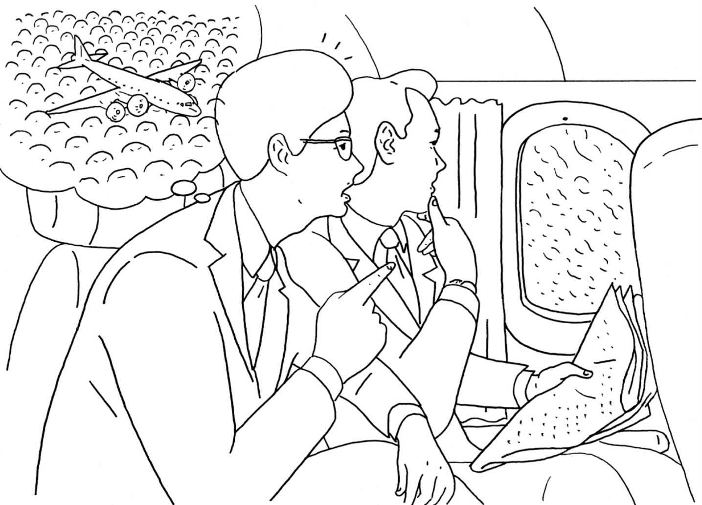
Sometimes, the real value of an*1 invention is found when it is used in a way that is quite different from its original purpose. In the 1950s, American engineer Alfred Fielding and Swiss*2 inventor Marc Chavannes thought they had a great idea. They would melt two plastic shower curtains together in a way that trapped air bubbles between the two sheets. The result: soft, thick*3 wallpaper!
*4 Unfortunately, nobody else thought it was a good idea. People didn't want thick plastic wallpaper. So Fielding and Chavannes started marketing it in other ways. Their company, Sealed Air, began selling it as a covering for*5 greenhouses. This had a little bit of success, but*6 nothing like Fielding and Chavannes had hoped.
While this was*7 going on, several different events*8 came together to create a burst of*9 insight that changed everything. One of these events was that computer company IBM developed a new computer, called the 1401. Then in 1959, a market expert at Sealed Air named Frederick Bowers took an airplane ride. Looking out the window, he saw clouds below. They looked like soft pillows, gently supporting the airplane.
At that moment, he*10 came up with the idea that made history. Instead of using Sealed Air material to cover walls, why not use it to protect things? It could keep*11 delicate products from being damaged in*12 shipping ─ delicate products like ... computers!
Bowers went to IBM and showed them what his product could do. They liked the idea and decided to use it to protect the 1401, which became one of the most widely used computers in the world. Soft wrapping for delicate products had always been a problem. When more businesses began to see what a great packaging solution this product was, its use spread more and more widely.
It is now know as*13 Bubble Wrap, and everyone loves it. Large businesses use it to protect valuable products. Friends use it to make sure birthday presents don't break in the mail. And children love to*14 snap the little bubbles and hear that pop. There probably isn't anyone who uses Bubble Wrap for wallpaper. Now, so much Bubble Wrap is produced each year that it could be wrapped around the*15 equator 10 times.
371 words
The point of this story
DLMP3_07
Ideas don't always move in a straight line. Everyone knows that Bubble Wrap protects things. But Alfred Fielding and Marc Chavannes*16 originally invented it as wallpaper. That idea failed, so they tried another. That one wasn't so great, so market expert Frederick Bowers tried yet another. If you like Bubble Wrap, you can thank its inventors for never giving up.
時に、発明の真の価値が、当初の目的とはかなり違っている方法で使われた際に見いだされることがあります。1950年代に、アメリカ人技術者のアルフレッド・フィールディングと、スイス人発明家のマルク・シャバンヌは、素晴らしいアイデアを得たと思いました。２枚のビニール製シャワーカーテンを溶かし、その２枚のシートの間に、一緒に気泡を閉じ込めようというのです。できたのは、柔らかく、厚みのある壁紙でした！
残念ながら、他の誰もこれを名案とは思いませんでした。人々は厚みのあるビニール製壁紙を欲しがらなかったのです。そこで、フィールディングとシャバンヌは他の用途で売り込みを始めました。彼らの会社、シールドエアーは、それを温室の覆いとして売り始めました。これはほんの少し成功しましたが、フィールディングやシャバンヌの期待とは程遠いものでした。
こうしたことが起こっている間に、複数の異なる出来事が同時に発生して、全てを一変させるひらめきを生み出しました。出来事の一つは、コンピューター企業のIBMが1401という新型コンピューターを開発したことでした。そして、1959年に、シールドエアーに勤務するマーケティングの専門家、フレデリック・バウワーズが飛行機に乗りました。窓から外を眺めていた彼は、眼下の雲を見ました。それらは、飛行機をそっと支える柔らかな枕のようでした。
その瞬間、歴史に残るアイデアが彼に浮かびました。シールドエアーの素材を、壁を覆うのに使うのではなく、物を保護するのに使うのはどうだろう？ 壊れやすい製品が輸送中に破損するのを防ぐことができるだろう──壊れやすい製品、例えば......コンピューターのような！
バウワーズはIBMに行って自社の製品にどんなことができるか紹介しました。彼らはそのアイデアが気に入り、1401を保護するためにそれを使うことにしました。1401は世界で最も広く使われたコンピューターの一つになりました。壊れやすい製品向けの柔らかい梱包材は、それまでずっと悩みの種でした。この製品が、いかに素晴らしい梱包の解決法であるかを、多くの企業が理解し始めると、その利用はどんどん広まっていきました。
現在、それはバブルラップとして知られ、みんな大好きです。大企業は、高価な商品を保護するために使います。友人たちは、誕生日の贈り物が郵送中に決して壊れないようにするために使います。そして子どもたちは、小さな気泡をパチンと鳴らして、そのポンという音を聞くのが大好きです。おそらく誰もバブルラップを壁紙には使いません。今や、毎年大量のバブルラップが製造されていて、赤道を10回巻くことができるほどです。
このストーリーのポイント
アイデアの中には紆余曲折を経るものがあります。バブルラップが物を保護するためのものであることは、誰もが知っています。しかし、アルフレッド・フィールディングとマルク・シャバンヌは、もともと壁紙として発明したのです。そのアイデアが失敗したので、彼らは別のものを試してみました。それも今ひとつだったので、マーケティングを専門とするフレデリック・バウワーズが、さらに新しいアイデアを試しました。バブルラップが好きな人は、その発明者たちが決して諦めなかったことに、感謝しましょう。
DL08_A Fluid Solution
逆転の発想
A Fluid Solution
修正液という解決法
世界中のオフィスで使われている修正液を発明したのは、画家志望の女性だった。そのアイデアの出どころになったものはというと......。
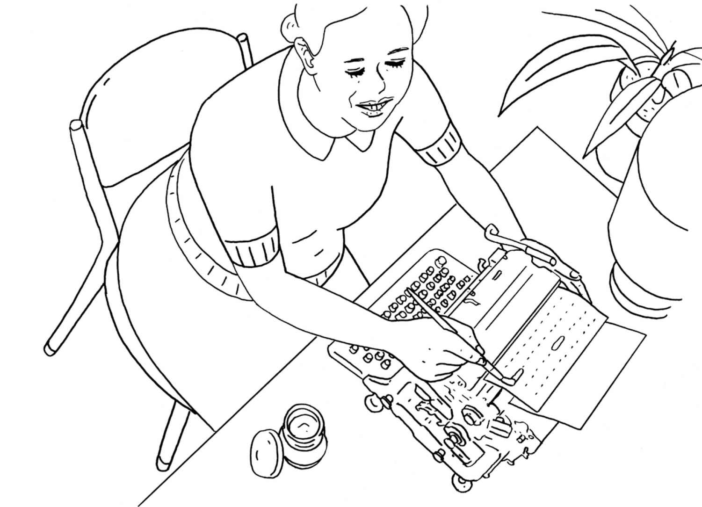
The name Bette Nesmith Graham may not be familiar to you, but her invention might be in your desk drawer!
Nesmith started out in 1951 as a single mother in Dallas, Texas,*1 making a living as a secretary.
Nesmith had originally wanted to be an artist. But as a*2 divorced young mother without a high-school*3 diploma, she took the best job she could find, as a secretary at the Texas Bank & Trust. She certainly had no idea then that her background in art would*4 eventually help make her a*5 multimillionaire.
The electric typewriter was in popular use in offices at the time. These machines allowed secretaries to type faster, but the new ink also made it harder to*6 erase any mistakes.
Nesmith was good at her job, and yet, like all the other secretaries at the bank, she did sometimes make typing errors. Nesmith's experience with art helped her think of a solution. She realized that in painting, an artist never corrects by erasing but always paints over the error. "So I decided to use what artists use." She took some white,*7 water-based*8 tempera paint and a small*9 watercolor brush to the office and used them to correct her mistakes.
Soon all the other secretaries in the office wanted some. In 1956, she started the Mistake Out Company and worked on nights and weekends to fill orders. She named the product*10 Liquid Paper, the*11 white-out*12 correction fluid.
Success did not come easily. She kept improving the*13 formula and taking in small orders from around the country. Her first big order ─ for 300 bottles in three colors ─ was from General Electric. That helped Nesmith decide to work as a secretary only part-time and to spend more time on her business. In 1960, Nesmith's company was losing money, but she kept at it. She married Robert M. Graham in 1962, and they soon went on the road marketing her invention. That was the*14 turning point.
In 1968, Nesmith Graham moved the company into its own plant and*15 headquarters and changed its name to Liquid Paper. That year, they sold a million bottles. In 1976, the company produced 25 million bottles and had*16 earnings of $1.5 million. In 1979, Nesmith Graham sold the company to Gillette for $47.5 million. She died just six months after selling the company, in 1980, at age 56.
She left half of her fortune to her son, Michael, and used the rest to establish two charitable foundations. Her Gihon Foundation, which still exists today, helps artists and*17 promotes culture by arranging and*18 subsidizing live performances by*19 emerging and*20 established women artists that are presented to the public for free.
444 words
The point of this story
DLMP3_08
Sometimes it takes vision and*21 backbone to keep on heading down a*22 rocky road to success. Bette Nesmith Graham was not afraid of risks. She followed her goals and eventually her*23 dedication paid off. Even then, she used her vast fortune to help other women who, like she once had, dreamed of being artists.
ベット・ネスミス・グラハムの名前になじみがないかもしれませんが、彼女の発明品はあなたの机の引き出しにあるかもしれません！
1951年、ネスミスはテキサス州ダラスで、シングルマザーとして、秘書の仕事で生計を立て始めました。
ネスミスはもともと画家を目指していました。しかし、高校も卒業していない離婚した若い母親であった彼女は、見つけられる限りで最善の仕事として、テキサス信託銀行で秘書の仕事に就きました。彼女はその時はもちろん、その芸術の素養がやがて自分を億万長者にしてくれるとは知る由もありませんでした。
当時のオフィスでは、電動タイプライターが広く使われていました。こうした機械のおかげで秘書のタイプの速度は上がりましたが、新しいインクのせいで間違いを消すのが難しくもなっていました。
ネスミスは仕事をうまくやっていましたが、それでも、銀行の他の全ての秘書たちと同じように、時々タイプミスをしました。ネスミスの芸術での経験が、彼女に解決法を思い付かせました。絵を描くとき、画家は削り落として直したりはせず、必ずミスの上に重ね塗りをすることに、彼女は思い至りました。「ですから、画家のやり方を採用することにしたんです」。彼女は白い水性のテンペラ絵の具と水彩画の小筆をオフィスに持ち込んで、自分のミスを直すのに使いました。
すぐに、社内の他の秘書たち全員が欲しがりました。1956年に彼女はミステイク・アウト社を発足させ、夜と週末に働いて注文に応えました。彼女はその製品をリキッド・ペーパー、すなわち白塗りする修正液と名付けました。
成功は簡単には訪れませんでした。彼女は調合を改良し続け、全国から小口の注文を受け続けました。初めての大口注文は３種類の色を300本でしたが、それはゼネラル・エレクトリック社からでした。その注文は、ネスミスが秘書の仕事をパートタイムだけにして、自分の事業にもっと時間を使おうと決める後押しになりました。1960年にネスミスの会社では損失が出ていましたが、彼女は踏ん張りました。1962年に彼女はロバート・M・グラハムと結婚しました。そして、２人はすぐに彼女の発明品を売り込む旅に出ました。それが転機となりました。
1968年にネスミス・グラハムは自社工場と本社を設け、社名をリキッド・ペーパーに変更しました。その年、同社は100万本を売り上げました。1976年に同社は2,500万本を生産し、150万ドルの利益を上げました。1979年、ネスミス・グラハムは、自社を4,750万ドルでジレット社に売却しました。そして、1980年、会社の売却からわずか６カ月後に、彼女は56歳で亡くなりました。
彼女は財産の半分を息子のマイケルに残し、残りは２つの慈善財団の創設に使いました。今も存続するギホン財団は、新進あるいは有名な女性アーティストによる、無料公開ライブの企画と助成を行うことで、アーティストを支援し、文化を促進しています。
このストーリーのポイント
ビジョンと強い意思がなければ、成功への険しい道を進み続けられないことがあります。ベット・ネスミス・グラハムは、リスクを恐れませんでした。彼女は目標へ向かって進み、最終的にはその熱意が報われました。そうなって後も、膨大な財産を費やして、かつての自分のように芸術家を夢見る女性たちを支援しました。
*1 make a living：生計を立てる
*2 divorced：離婚した
*3 diploma：卒業証書
*4 eventually：結局のところ、最後には
*5 multimillionaire：億万長者
*6 erase：...を消す、...を削除する
*7 water-based：水性の
*8 tempera paint：テンペラ絵の具（顔料の固着剤に乳化物を使った、不透明な絵の具）
*9 watercolor：水彩画
*10 Liquid Paper：リキッド・ペーパー（修正液の商品名）
*11 white-out：白く消すための、修正の
*12 correction fluid：修正液
*13 formula：処方、調合法
*14 turning point：転機、転換点
*15 headquarters：本社
*16 earnings：利益、利潤
*17 promote：...を推進する、...を促進する
*18 subsidize：...に助成金を出す、...を支援する
*19 emerging：新進の
*20 established：名声が確立した
*21 backbone：気骨
*22 rocky：険しい、困難な
*23 dedication：専念、献身、熱意
DL09_Mr. Persistent
発想の転換
Mr. Persistent
粘着男
接着力が弱く使い道のなさそうな接着剤に何年もこだわり、同僚から変人扱いされていたスペンサー・シルバー。そんな同僚の一人だったアート・フライは、教会の聖歌隊で歌う際、突如、スペンサー・シルバーの接着剤の使い道を発見したのだった......。
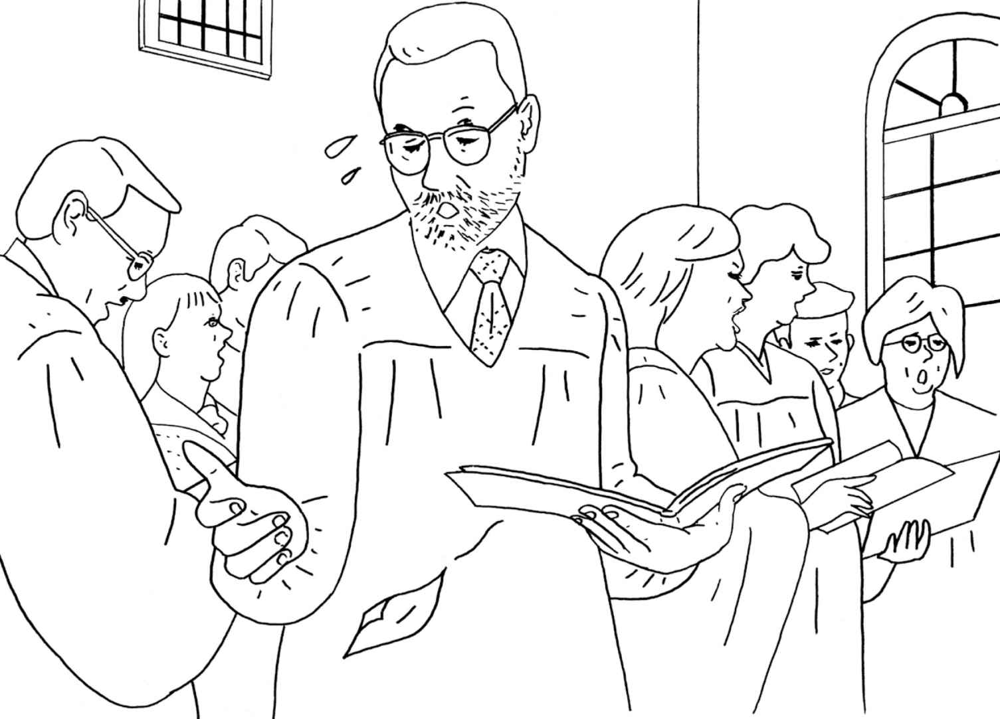
When Spencer Silver, a*1 chemist working at 3M Company, discovered a new kind of*2 adhesive, nobody*3 thought much of it. His job was to discover stronger, tougher adhesives. But Silver's new*4 sticky stuff was weak. It was so weak that pieces of paper*5 stuck together could be*6 pulled apart easily.
Silver thought his new adhesive had to be good for something. But nobody could think of what that something might be. At 3M, Silver always talked about his adhesive, trying to interest others in it. But after a few years, most people stopped listening. No one was very interested, no one had any ideas, and people started to joke about Silver, calling him "Mr.*7 Persistent" because he never gave up.
Then, as sometimes happens with inventions, the bright idea came from a personal need. Art Fry also worked at 3M, and he had heard Silver talk about his adhesive. Like everyone else, he couldn't think of a use for it either ... until one day in church. Fry was singing in his church*8 choir, but he had difficulty keeping up. He put slips of paper in his*9 hymn book to mark the pages. But when he opened the book, they fell out. He wished he could make the paper slips stick to the pages and then*10 peel off without tearing the paper. Then he remembered his friend "Mr. Persistent" ─ there was a way!
By putting Fry's idea for sticky paper together with Silver's adhesive, they had a great product idea. But the road to the finished product was long. It took about 12 years to perfect the adhesive and develop ways of making it work just right. But*11 persistence paid off. If you work in an office, those little paper Post-it notes are probably a part of your*12 day-to-day life. They're so useful that 3M makes 50 billion of them every year.
Silver says that he feels proud when he sees Post-it notes stuck around computer screens in the movies. This shows that his invention has become a part of popular culture. As Fry puts it, "It's not just a*13 bookmark. It's a whole new way of communicating."
359 words
The point of this story
DLMP3_09
3M chemist, Spencer Silver tried to make a powerful adhesive, but he failed. Nobody thought his weak adhesive was useful. But Silver knew that it had to have some use. He never gave up telling everyone about it. People*14 made fun of him for being so persistent. One day, his friend Art Fry had a simple problem, and he realized that Silver's adhesive could solve it. The result was an invention that has become a major presence in offices all around the world.
スリーエムに勤める化学者、スペンサー・シルバーが新種の接着剤を発見した時、それを高く評価した人は誰もいませんでした。シルバーの仕事は、より強力で頑強な接着剤を発見することでした。しかし、彼が新たに開発した接着剤は、弱いものでした。あまりに弱いので、一緒に接着した紙が簡単に剥がれてしまいました。
シルバーは、新しい接着剤が何かの役に立つはずだと思いました。でもそれが何なのか、誰も思い付くことができませんでした。スリーエムの社内で、シルバーは他の人たちの興味を引こうと、いつも彼が開発した接着剤のことを口にしていました。でも２、３年すると、ほとんどの人が聞いてくれなくなりました。誰もあまり興味を持ってないし、アイデアもありませんでした。人々は、シルバーが決して諦めないので、彼をからかって、「粘着男」と呼ぶようになりました。
そんな折、発明というものに時として起きることですが、ごく個人的なニーズから素晴らしいアイデアが生まれたのです。同じくスリーエムに勤務していたアート・フライは、シルバーが例の接着剤のことを語っているのを聞いたことがありました。しかし、皆と同様に、その使い道は思い付きませんでした......教会でのとある日まで。フライは自分の教会の聖歌隊で歌っていましたが、進行についていくのに苦労していました。フライはページに印を付けておくため、聖歌集に紙片を挟んでおきました。しかし、本を開くとばらばらと落ちてしまいます。この紙片を、紙を破らずページに貼れたり剥がせたりできたらなあと思いました。その時、友人の「粘着男」のことが頭に浮かんだのです──これだ！
フライのくっつく紙のアイデアとシルバーの接着剤を組み合わせることで、素晴らしい製品のアイデアになりました。しかし、完成品への道は遠かったのです。接着剤を完成させ、それがきちんと機能する方法を開発するのに、およそ12年かかりました。しかし、その粘り強さは報われました。オフィスで働く人にとって、小さなポスト・イットの付せんは、恐らく日常生活の一部です。本当に便利なので、スリーエムは、年間500億枚のポスト・イットを生産します。
映画の中で、コンピューターの周りにポスト・イットが貼られているのを見ると、シルバーは誇らしい気持ちになると言います。それは自身の発明がポピュラーカルチャーの一部になったことを示しているからです。フライが言うように、「ポスト・イットは、単なるしおりではありません。全く新しいコミュニケーションの方法なのです」。
このストーリーのポイント
スリーエムの化学者、スペンサー・シルバーは、強力な接着剤を作ろうとしましたが失敗しました。彼の作った弱い接着剤が役に立つとは、誰も思いませんでした。でもシルバーは、何かしら使い道があるはずだと信じていたのです。彼は決して諦めず、皆に話し続けました。人々は彼のあまりの粘り強さをからかいました。ある日、友人のアート・フライは、ごく単純なことで困った時、シルバーの接着剤ならそれが解決できることに気付きました。この結果として生まれた発明品は、世界中のオフィスに欠かせない存在となったのです。
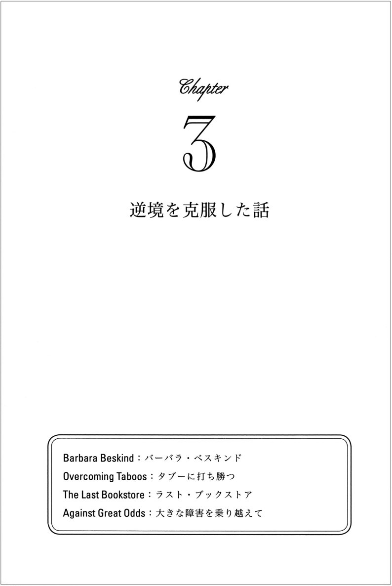
DL10_Barbara Beskind
夢の実現
Barbara Beskind
バーバラ・ベスキンド
90歳になって、子ども時代からの夢をかなえたバーバラ・ベスキンド。社会の高齢化が進む中、年齢を強みに変えられる仕事として彼女が目指したものとは......。
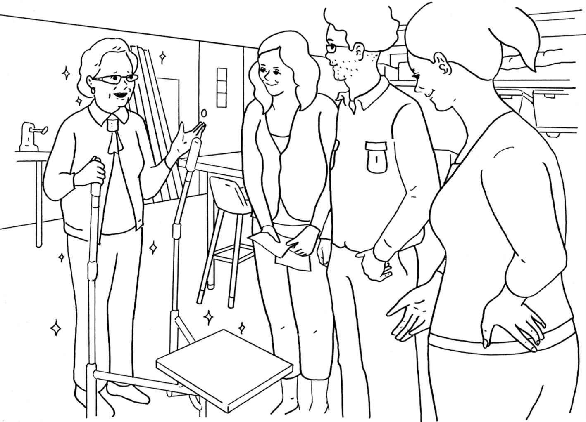
In the*1 youth-obsessed business culture of California's Silicon Valley, age is often considered a*2 hindrance. But 92-year-old Barbara Beskind has*3 turned that idea on its head.
Success as a professional product designer did not come early to Barbara, although she has been a designer all her life. She says that she first began designing at age 8. It was during*4 the Great Depression, and her family could not buy the toys she so badly wanted. Instead of giving up, Barbara created her own toys. She taught herself how to make things by experimenting and never giving up. Her first design success was a*5 hobbyhorse made out of old tires.
Barbara wanted to become an*6 inventor, but her dream was blocked. When she was about to go to college, she was told that a woman could not*7 major in engineering. Instead, she studied other subjects and then joined the Army, where she worked for 44 years.
But a woman like Barbara could not be stopped forever. She still wanted to invent, so she designed*8 inflatable devices that helped children who had problems balancing. She never stopped working to solve problems.
In 2013, while watching TV, she saw an interview with the*9 founder of IDEO, design*10 consulting firm. His open attitude and his desire to have many different kinds of people on his staff*11 inspired Barbara to*12 apply for a job. This is when she turned her age into an advantage and realized her career dream of creating products to solve problems.
As the population gets older, IDEO is interested in designing products that help older people. Barbara lives in a community for older people who face the many challenges that come with age, such as the danger of serious injury from falling. The design ideas Barbara takes from daily life include things like an air bag system to help prevent such injuries and things that let elderly people charge*13 electronic devices without having to handle tiny batteries. She has some vision problems, so she created designs for "smart" eyeglasses that help recognize and identify people. This is how Barbara turns the challenges of getting older into professional advantages.
The*14 thrill of invention that inspired Barbara to design toys nearly a century ago is still strong: "Live life as an adventure," she said. The young people who work with Barbara say she makes them feel a new excitement about their jobs.
As we all age, we can learn from Barbara's wisdom and her example as a leader: she says that she thinks the beauty of being older is that you can look back and see how the little pieces fit into the big pieces of life. "And life is a complete puzzle," she said.
452 words
The point of this story
DLMP3_10
As a child, Barbara Beskind was a natural inventor. She designed and made toys her family could not buy. For many years, society prevented her from becoming a product designer. But society changed over the years, and at age 90, she got a job at consulting firm IDEO. She inspires us all with her talent and enthusiasm. If you apply your talent and never give up, the best is yet to come.
若さにこだわるカリフォルニア州シリコンバレーのビジネス文化では、年齢は障害と見なされがちです。しかし、92歳のバーバラ・ベスキンドは、そうした通念を覆しました。
バーバラには、プロのプロダクトデザイナーとしての成功が早くには訪れませんでしたが、彼女は生まれてこのかたデザインをしていました。彼女によれば、最初にデザインを始めたのは８歳の時だそうです。当時は世界大恐慌のさなかで、彼女が欲しくてたまらなかったおもちゃを、家で買ってもらえませんでした。バーバラはおもちゃを諦める代わりに、自分で作ったのです。音を上げずにあれこれやってみることで、物作りを独学しました。初めてうまくデザインできたのは、古タイヤで作った揺り馬でした。
バーバラは発明家になりたかったのですが、その夢は閉ざされました。大学に行こうとした時、女性は工学を専攻できないと言われたのです。代わりに他の科目を勉強して陸軍に就職し、44年間勤めました。
しかし、バーバラのような女性を、ずっととどめておくことはできませんでした。彼女はそれでも発明したかったので、体のバランスがうまくとれない子どもたちを助ける目的の、空気で膨らませることができる器具をデザインしました。彼女は問題解決に取り組むことを、決して止めなかったのです。
2013年にテレビを見ていた時、バーバラはデザイン・コンサルティング会社IDEOの創設者のインタビューを目にしました。そのオープンな姿勢や、スタッフとして多様な人材が欲しいという希望に触発されて、バーバラは仕事に応募する気になりました。自分の年齢を強みに変えて、さまざまな問題を解決する製品を作る仕事に就きたいという夢を彼女が実現したのは、まさにこの時でした。
人口の高齢化が進む中、IDEOでは高齢者に役立つ製品のデザインに注目しています。バーバラが住むシニアコミュニティでは、転倒して大けがをする危険性など、加齢に伴う多くの問題に高齢者が直面しています。バーバラが日常生活からデザインのアイデアを得たものには、そうしたけがを防ぐのに役立つエアバッグシステムや、高齢者が小さな電池を扱う必要なしに電子機器に充電ができる製品などがあります。彼女は視力に問題があるので、人を認識できたり、特定できたりする「スマート」メガネのデザインを考案しました。バーバラはこのようにして、加齢に伴う問題を職業上の強みに変えているのです。
１世紀近く前、バーバラにおもちゃをデザインする気にさせた発明のワクワク感は、今も健在です。「人生は冒険だと思って生きるのよ」と彼女は言いました。若い同僚たちはバーバラのおかげで、自分の仕事に対し新たな面白みを感じていると言います。
年を取らない人はいないので、先駆者として、バーバラの知恵や模範に学ぶことができます。年を取って良かったと思うことは、振り返った時に、人生の小さなかけらが、いかにして大きなかけらを埋めていったのかが分かるということです、と彼女は言います。「そして、人生というものは全くのパズルなんですから」、そう彼女は言いました。
このストーリーのポイント
子ども時代のバーバラ・べスキンドは、生まれつきの発明家でした。家で買ってもらえなかったおもちゃは、自分でデザインして作りました。長い間、社会状況により、プロダクトデザイナーになることができませんでした。しかし、社会は何年もかけて変化し、バーバラは90歳にして、コンサルティング会社IDEOに就職したのです。バーバラはその才能と熱意とで、私たちを元気づけます。自分の才能を生かし、決して諦めなければ、最高のことがこれから訪れるかもしれません。
DL11_Overcoming Taboos
女性の解放
Overcoming Taboos
タブーに打ち勝つ
あることが原因で、インドでは多数の女性が感染症にかかったり、進学を諦めたりしている。このような問題を解決するため、奇異の目にさらされながらも一人の男性が体を張って、女性の健康のために立ち上がった。
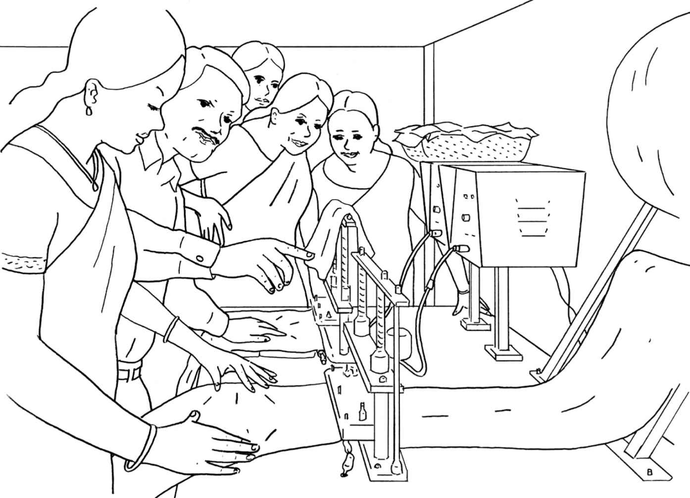
Arunachalam Muruganantham ─ or "Muruga," as he calls himself ─ was determined to make a cheap and effective*1 sanitary pad. He thought the women of India needed it. They, on the other hand, thought he was crazy. During his years of research, his wife left him. His village thought he was*2 possessed and wanted to chain him*3 upside-down to a tree.
It all started during the early days of his marriage. Muruga saw his wife carrying something behind her back, and he asked her what it was. "*4 None of your business," she said,*5 slapping his cheek. But he saw that it was a*6 stained*7 rag. Muruga knew right away what it was, because he had grown up with two sisters. It was one of the old stained cloths that women in India call "*8 nasty cloths." The women use these same cloths over and over each month, when they have their*9 periods.
He asked his wife why she didn't use sanitary pads. She answered that they were much too expensive. If she bought them for the women in the family, she said, they wouldn't have any money for milk or food. He went to buy some pads for his wife, and he was shocked at the cost. He decided to try to make ones that would be more*10 affordable. He bought a large piece of cotton, cut it into*11 rectangles and lined it with*12 sturdier cloth. He asked his wife to test it, and she said she would the following month.*13 Astonishingly, that was when he realized women's periods came only once a month.
When he started researching, he found that hardly any women in his area used pads ─ less than one in 10. He also learned that many women in India who used cloths were too*14 embarrassed to dry them in the sun, so the rags never really got clean. Women often get*15 infections from*16 filthy rags, and the custom is also believed to be a cause of the high rate of*17 cervical cancer in India.
He decided to try the pads himself, using a sack filled with blood. He made some small holes in one and wore it under his clothe everywhere he went. It didn't work very well. And people thought he had lost his mind, especially when they saw him washing his*18 bloody clothes at the public*19 well. They said he must have had a*20 sexual disease. That was when his wife left.
Muruga learned what the pads were made from: hard*21 cellulose board. But that board needed to be broken down by machine. A machine like that would cost many thousands of dollars to buy. Muruga decided to build his own.
Almost five years later, he had done it.
First, a machine like a kitchen*22 grinder breaks down the cellulose into*23 fluffy material. Then, another machine packs it into cakes. The cakes are then wrapped in*24 nonwoven cloth and*25 disinfected with*26 ultraviolet rays. He kept the machine simple, without motors, on purpose, so that it could be maintained and repaired by local women.
Muruga was shocked when he won a national award for innovation. He did not even know he had been*27 nominated. There were 943 entries, and his machine won first prize. Pratibha Patil ─ the president of India at the time ─ presented the award to him. His wife came back, and*28 eventually even the*29 villagers changed their minds about him.
Slowly, over time, Muruga built up the number of machines he produced. Now, his machines are found in 1,300 villages in 23 Indian states. Local women make the pads and decide how much to sell them for. A single machine creates jobs for 10 women and produces 200 to 250 pads a day. In stores, sanitary pads cost about $1.50 for an eight-pack. But with Muruga's machine, women can make an eight-pack for just 25 cents. They decide the price and keep any profit.
Before, almost one-fourth of the girls in India dropped out of school when they first started getting their periods. Now, with Muruga's machines, some of these girls are ─ instead of dropping out ─ making their own pads and also making a small profit.
Muruga is in the process of taking his machines to 106 different countries, including Kenya, Nigeria, Mauritius, the Philippines and Bangladesh. "This is a problem all developing nations face," he says.
728 words
The point of this story
DLMP3_11
Muruga continued to believe in his own idea, even when everyone around him said he was crazy. He kept going step by step toward his goal. He did it not to become wealthy but because he saw a real need. It took many years, but finally he created a machine that women across India are now using. The machine will never make him rich, but it does give him the satisfaction of knowing that he is making a real difference in people's everyday lives. And that seems to be enough for Muruga.
自称「ムルガ」のアルナチャラム・ムルガナンタムは、安価で役に立つ生理用ナプキンを作ると心に決めていました。インドの女性に必要なものだと信じていたのです。ところが女性たちの方は、この人は頭がおかしいのだと思いました。何年もかけて研究するうち、妻は彼の元を去りました。地元の村では、あいつは何かに取りつかれたのだから、逆さまにして木に吊るした方がいいとまで思われていました。
そもそもの始まりは、彼が新婚だったころのことでした。ムルガは妻が背後に何かを隠しているのを見て、それは何かと尋ねました。妻は、「あなたには関係ないわ」と言って、彼の頬を平手打ちしたのです。しかし、彼は、それが染みのついたぼろ切れであることを見抜きました。姉妹２人と一緒に育ったので、それが何か、ムルガはすぐに分かりました。インドの女性が「汚らわしい布」と呼ぶ、染みがついてくたびれた布だったのです。女性たちは毎月生理が来るたび、その同じ布を繰り返し使用するのでした。
彼は妻に、なぜ生理用ナプキンを使わないのだと尋ねました。彼女は、値段が高すぎるからと答えました。一家の女性全員に買ってあげたら、牛乳や食べ物を買うお金がなくなってしまうと言いました。彼は妻のためにナプキンを買いに行って、その値段にショックを受けました。それなら、より手ごろな価格のものを作ってみようと決心したのです。大判の木綿を購入して長方形に切り、より頑丈な布で裏打ちしました。妻に使ってみるよう頼むと、来月そうすると言われました。驚くべきことに、彼が女性の生理が来るのは月一度だけだと気付いたのは、その時でした。
調査を始めてみて、自分の住む地域で生理用ナプキンを使っている女性はほとんどいない、つまり、10人に１人以下であることを知りました。また、布を使っている多くのインド女性は、それを日に当てて乾かすのを恥ずかしがるため、ぼろ布は本当に清潔にはならないことも知りました。女性たちは、汚れた布を使うことで、しょっちゅう感染症になります。インドで子宮頸がんの比率が高いのも、この習慣のためだとされています。
ムルガは血液を入れた袋を使って、生理用ナプキンを自分で使ってみることにしました。袋に小さな穴を開けて衣服の下に着用し、出掛ける時はいつも身につけていました。それはあまりうまくいきませんでした。その上、特にムルガが公共の井戸で血の付いた洋服を洗っているのを見た人たちは、この男は正気でないと思いました。きっと性病を持っているのだとも言われました。妻が去ったのはそのころです。
ムルガは、生理用ナプキンが何でできているかを学びました。硬いセルロースの板です。しかし、その板を、機械で粉砕する必要がありました。そうした機械を買うと、何千ドルもかかります。ムルガは自分で作ることにしました。
それからおよそ５年後、やっと機械が完成しました。
まず、フードプロセッサーのような機械で、セルロースを綿毛状の物質になるまで粉砕します。次に別の機械で、それを固形状に固めます。その次にその固形状の物を不織布で包んで、紫外線で殺菌します。ムルガはあえてモーターを使わず、機械を単純なものにとどめました。地方の女性たちが、自分たちで機械を維持し、修理できるようにするためです。
ムルガは、インドのイノベーション賞を受賞したと聞きびっくりしました。自分がノミネートされていたことすら知らなかったのです。943に上るエントリーから、彼の機械が一等賞に選ばれました。当時のインド大統領、プラティバ・パティルが、賞を授与しました。妻も戻り、村の人々もようやくムルガに対する見方を改めました。
時間をかけてゆっくりと、ムルガは機械を増やしていきました。現在では、インド国内23州の1,300の村で使用されています。地元の女性たちが生理用ナプキンを作り、いくらで売るかを決めています。１台の機械により10人の女性の雇用が生まれ、１日200から250個の生理用ナプキンが生産されます。店では、８個入りの生理用ナプキンが1.5ドルほどで売られています。しかし、ムルガの機械を使えば、女性たちは８個入りをたったの25セントで作ることができます。販売価格は自分たちで決めて、いくらかの利益を残すことができるのです。
以前は、インドの少女のおよそ４人に１人が、生理が始まった時点で学校を中退していました。今やムルガの機械はこうした少女たちにも使われており、学校を中退せず、自分たちでナプキンを作り、いくばくかの利益も得ています。
ムルガは、ケニア、ナイジェリア、モーリシャス、フィリピン、バングラデシュなど、106カ国でこの機械を使ってもらう準備をしています。「この問題は、あらゆる発展途上国が直面していることなんです」と彼は語っています。
このストーリーのポイント
彼の周囲の人すべてから気が狂っていると言われても、ムルガは自分のアイデアを信じ続けました。自分の目標に向かって、一歩一歩近づいていったのです。裕福になるためではなく、彼が本当に必要だと思ったから、そうしたのです。何年もかけてついに完成させた機械は、今やインド各地の女性に使われています。その機械が彼を金持ちにすることはありませんが、人々の日常生活を実質的に改善しているのだと知ることで、彼に満足感を与えてくれます。ムルガにとっては、それで十分なようです。
*1 sanitary pad：生理用ナプキン
*2 possessed：取りつかれた
*3 upside-down：逆さまの
*4 none of one's business：〜には関係ない
*5 slap：平手打ちする
*6 stained：染みのついた
*7 rag：ぼろ切れ
*8 nasty：汚らわしい、不快な
*9 period：生理
*10 affordable：手ごろな価格の
*11 rectangle：長方形
*12 sturdy：頑丈な
*13 astonishingly：驚くべきことに
*14 embarrassed：恥ずかしい、きまり悪い
*15 infection：感染症
*16 filthy：不潔な、汚い
*17 cervical cancer：子宮頸がん
*18 bloody：血の付いた、血に染まった
*19 well：井戸
*20 sexual disease：性病
*21 cellulose：セルロース、繊維素
*22 grinder：グラインダー、粉砕機
*23 fluffy ：綿毛状の、ふわふわの
*24 nonwoven cloth：不織布
*25 disinfect with ...：...で殺菌する、...で消毒する
*26 ultraviolet rays：紫外線
*27 nominate：...をノミネートする、...を推薦する
*28 eventually：ようやく、最終的に
*29 villager：村人
DL12_The Last Bookstore
新たな価値の提供
The Last Bookstore
ラスト・ブックストア
ネット書店の拡大で、個人経営から巨大チェーンまで、リアル書店が次々閉店していく中、「ラスト・ブックストア」という、刺激的な名前のロサンゼルスの書店が注目を集めている。これまでの書店と一味違う「最後の書店」の成功は、新たな書店を生み出すのだろうか。
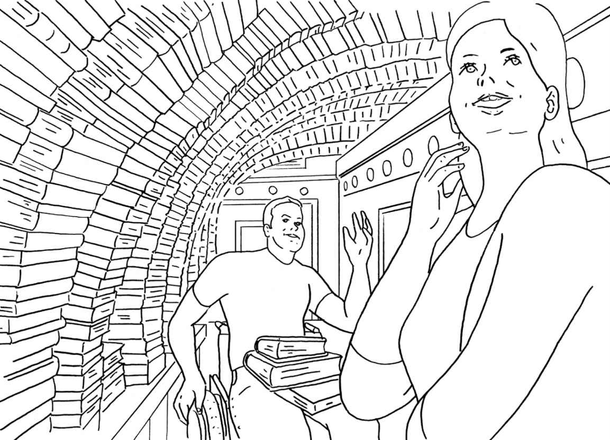
Josh Spencer clearly doesn't follow trends. He follows his own*1 intuition.
He opened a shop called The Last Bookstore in downtown Los Angeles in 2009 at a time when other bookshops around the country were closing. And in 2011, the same year that three bookstores in Southern California closed their doors and the giant bookstore chain Borders*2 filed for bankruptcy, The Last Bookstore actually expanded, moving into a 10,000-*3 square-foot former bank building in downtown Los Angeles.
"I haven't really*4 interacted with other business owners or bookstore owners," says Spencer. "I've always just done what I do, and it seems to work."
What he does is sell*5 a huge array of books, many of them used and*6 inexpensive. But it's not at all just about the books. Spencer says, "I*7 definitely wanted to create an experience. I thought people weren't going to come just to buy books, because they can buy them on Amazon."
His store is in a former bank with*8 vaulted ceilings. It is*9 decorated with*10 sculptures,*11 collages and an old*12 manual typewriter that floats in*13 midair on almost*14 invisible strings. "My dream," says Spencer, "was to create one giant space where everything I thought was cool would be in one place.*15 Hopefully other people will come in and share it with me."
Spencer*16 estimates that there are 250,000 books in the store ─ 20,000 new and the rest used. The store also sells records, CDs and DVDs. It has a*17 coffee bar. It has a stage for readings, music performances, theater events, and film showings.
The bookstore also has a*18 mezzanine level called the*19 Labyrinth. It contains a*20 maze of bookcases, hidden rooms and curved book tunnels as well as a Dollar Room of about 100,000 used books, each priced at $1.
The store seemed to Spencer like "a crazy idea that just might work." The way he sees it: "Human beings like to experience the world; we like to use our senses and be around other people."
He started out selling books and other items online, but he got tired of his apartment "looking like a permanent*21 garage sale" and decided to focus on books.
When a cheap commercial space opened up in front of his apartment, on Main Street, in 2009, he decided to try opening an actual store. His father, a*22 contractor, helped him set up the place in just 10 days. His father helped him again, two years later, to set up the*23 current, much larger space.
Business is going well, particularly in the new location, which is near the Arts District and Little Tokyo. There is, he says, a lot of foot traffic. Buying used books from local libraries and*24 nonprofits helps the store keep prices low.
Spencer likes the energy of the area. "Being in downtown L.A., it's a huge*25 melting pot. You've got*26 hoarders, homeless,*27 hipsters, really wealthy people. You've got everyone coming in here, mixing together, and that creates a certain*28 unpredictability."
Business has been good for the last year or so, Spencer says. The store has received a lot of good press and made it into many travel guides. New apartment buildings are going up in the neighborhood, bringing in more customers.
What does the name of the store mean?
Spencer believes that this generation of readers might be the last one to value the*29 physical book and the "*30 ritual of*31 browsing through books and holding books and turning pages."
One more thing that makes Spencer's story even more unusual: He became a bookseller after a*32 moped accident at age 21 put him in a*33 wheelchair. "It started as a hobby, then a job, and turned into a business over five years or so," he says. "It was something I could do on my own in a wheelchair without much help, and I didn't have to try and get a job."
The added challenge, he says, has made him work harder and better. "I learned to work faster and smarter in every*34 aspect I could, to*35 compensate for my*36 disability."
It may seem like a maze, especially the Labyrinth, but the store has an elevator, he says. "And I made sure everything was*37 accessible."
695 words
The point of this story
DLMP3_12
"A lot of the best things," Josh Spencer says, "are created when you're not finding what you want in life, so you just make it yourself." His bookstore, The Last Bookstore, in Los Angeles, is stamped everywhere with his personal style. It's a dreamlike space that encourages customers to spend time and hang out. He chose to open a bookstore at a time when many other bookstores were closing. Spencer's story shows that with enough passion and vision even a business model that some would say goes completely against*38 common sense can succeed.
ジョシュ・スペンサーは明らかに流行を追ってはいません。彼が追うのは自分の直感です。
彼は、全国で他の書店が次々に閉店していた時期の2009年、ロサンゼルスのダウンタウンにラスト・ブックストアという書店を開きました。そして2011年、南カリフォルニアの書店３店が、シャッターを降ろし、巨大書店チェーンのボーダーズが破産申請したその年に、ラスト・ブックストアは意外にも拡大し、同じロサンゼルスのダウンタウンにある１万平方フィート（約930平方メートル）の旧銀行ビルへと移転しました。
「他の事業経営者や書店経営者とはあまり交流してきませんでした」とスペンサーは言います。「いつもただ自分の仕事をしてきただけで、それがうまくいっているようです」。
彼の仕事とは、大量に並んだ本を売ることで、その多くは古本で値の張らないものです。でも、本だけかというと大違いです。「僕は体験を絶対に作り出したかったのです。みんな本を買うためだけに来るのではないと考えました。本はアマゾンでだって買えるのですから」とスペンサーは言います。
旧銀行ビルにある彼の店は丸天井になっています。彫刻やコラージュで飾られ、古い手動式タイプライターが１台、ほとんど見えない糸でつるされて空中に浮かんでいます。「僕の夢は」とスペンサーは言います。「自分がクールだと思ったものを全て一カ所に集めた巨大スペースを作ることでした。できれば、他の人たちも来て共有できるような」。
スペンサーの見積もるところ、店には25万冊の本があります。新刊は２万冊で、あとは古本です。店ではレコードやCD、DVDも販売しています。カフェも併設されています。朗読や音楽の演奏、演劇イベント、そして映画上映ができるステージもあります。
この書店には「ラビリンス」と呼ばれる中２階フロアもあります。そこにあるのは、本棚の迷路や隠し部屋、曲線的に本を積み上げたトンネル、さらには１冊１ドルの中古本を約10万冊収めた「ダラー・ルーム」などです。
この店は、スペンサーにとって「もしかしたらうまくいくかもしれないハチャメチャなアイデア」に思えました。彼の見方はこうです。「人間というものは世界を体験するのが好きで、僕らは自分の五感を使うことや他の人と一緒にいることが好きなんです」。
彼は本やその他の品物をオンライン販売するところから始めましたが、自分のアパートが「いつまでも続くガレージセールみたいに見える」ことにうんざりし、本に特化することに決めました。
2009年に、メーン通りに面した自分のアパートの目の前の安価な商業スペースが空いたとき、彼は実店舗を開くことを決心しました。建築請負業者をしていた父親が、わずか10日間で店を設営するのを手伝ってくれました。父親は、２年後にも、現在のずっと広いスペースの準備をする手伝いをしてくれました。
アート地区とリトル・トウキョウにほど近い、この新しい場所では特にビジネスは順調です。歩行者が多いのだと、彼は言います。地元の図書館や非営利団体から中古本を買い取ることで、店での値段も安く抑えられます。
スペンサーはこの地域の活力を気に入っています。「ロサンゼルスのダウンタウンにいると、ここは巨大なるつぼですね。物をため込む人も、ホームレスも、流行に敏感な人も、本当にお金持ちな人もいます。誰も彼もがここに来て、混じり合い、そのおかげで、ある種の予測不能な状態が生まれます」。
ビジネスはここ１年ほどは順調だとスペンサーは言います。店は何度も好意的に報道され、数多くの旅行ガイドにも載りました。新しいアパートが近所に建設され、客はさらに増えています。
店名の意味は？
スペンサーは、この読者世代が、紙の本と、「本を拾い読みしたり、本を手に取ったり、ページをめくったりする儀式」に価値を置く最後の世代になりそうだと思っているのです。
スペンサーの物語にはもう一つ、さらに非凡な点があります。彼が本の販売を始めたのは、21歳で小型バイクの事故に遭い、車椅子生活になってからなのです。「趣味として始まり、仕事になって、それが５年かそこらでビジネスになりました」と彼は言います。車椅子でもこれといった手助けを必要とせずに自力でできることでしたし、就職するための労力も不要でした」。
加わった試練のおかげで、仕事に対し熱心になり、より向上したと彼は言います。「障害を補うため、あらゆる面でできる限り速やかに、無駄なく仕事をすることを覚えました」。
特にラビリンスのところなど、まるで迷路のようです。しかし、店にはエレベーターがあるのだと、彼は言います。「それに、全てが利用しやすいように、徹底的にやりましたので」。
このストーリーのポイント
「最高のものの多くは、暮らしの中で、必要とするものが見つからないから、自分で作ろうという時に生まれます」とジョシュ・スペンサーは語ります。ロサンゼルスの彼の書店、ラスト・ブックストアは、至るところに彼の個人的なスタイルが刻印されています。それはお客さんがぶらぶらと時間を過ごしたくなる、夢のような空間です。彼は多くの書店が閉店している時に、あえて書店をオープンしました。スペンサーの物語は、常識に真っ向から逆らっていると言われるようなビジネスモデルであっても、それに足る情熱とビジョンがあれば、成功が不可能ではないことを教えてくれます。
*1 intuition：直感、洞察
*2 file for bankruptcy：破産申請する
*3 square-foot: 平方フィート（約0.093平方メートル）の
*4 interact with ...：...と情報のやりとりをする、...と交流する
*5 an array of ...：ずらりと並んだ...
*6 inexpensive：高価でない
*7 definitely：確かに、絶対に
*8 vaulted ceiling：アーチ型天井、丸天井
*9 decorated with ...：...で装飾される
*10 sculpture：彫刻、彫像
*11 collage：コラージュ
*12 manual：手動の
*13 midair：空中、上空
*14 invisible：目に見えない
*15 hopefully：できれば、願わくば
*16 estimate：...と見積もる
*17 coffee bar：カフェ
*18 mezzanine：中２階
*19 labyrinth：ラビリンス、迷宮
*20 maze：迷路
*21 garage sale：ガレージセール、自宅で行う不要品セール
*22 contractor：建築請負業者
*23 current：最新の、現行の
*24 nonprofit：非営利団体（= non-profit organization）
*25 melting pot：るつぼ
*26 hoarder：ため込む人、物を捨てられない人
*27 hipster：流行に敏感な人、最先端を行く人
*28 unpredictability：予測が不可能であること
*29 physical book：物理的な本、紙の本（電子書籍と対比した言い方）
*30 ritual：儀式、決まったやり方
*31 browse through：拾い読みする、ザッと目を通す
*32 moped：原付自転車、小型バイク
*33 wheelchair：車椅子
*34 aspect：側面、局面
*35 compensate for ...：...を埋め合わせる、...を補う
*36 disability：身体障害
*37 accessible：到達可能な、利用しやすい
*38 common sense：常識
DL13_Against Great Odds
道を開く
Against Great Odds
大きな障害を乗り越えて
南北戦争直後に解放奴隷の子どもとして生まれ、苦労の末に立ち上げた事業が成功し、最初の黒人女性のミリオネアになった、マダム・C.J. ウォーカー。その出発点となったのは、自分自身の小さな悩みにあった......。
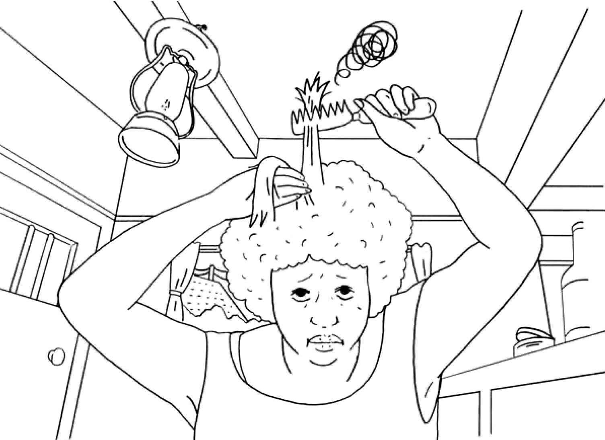
In 1867, a baby girl named Sara Breedlove was born on a cotton farm in Louisiana. Her parents were recently freed slaves, and her early life was not easy. At age 7, she became an*1 orphan. She married at age 14, but her husband died by the time she was 20, leaving her to support a young daughter.
Like many other young*2 African-American women, she left*3 the South in the late 1880s to seek a better life in the big cities of the Northern states. She went to St. Louis, Missouri, where she could be with her four brothers, and she began earning money by washing clothes and cooking.
Most people would simply struggle and try to survive. But Sara had a special talent for turning difficulties into opportunities. She suffered from a health condition that made her hair*4 fall out. She looked for products in stores that might help. But none of them seemed to be made for African-American women's hair.
This is where her spirit and personality*5 set her apart from everyone else. Rather than accept her problem, she worked to solve it. And then she*7 turned her*6 solution into a successful business. She began by experimenting with many*8 homemade cures and products from stores. And she asked for advice from her brothers, who were working as barbers.
In 1905, she moved to Denver, Colorado, to work as a*9 sales agent for Annie Malone, a*10 businesswoman selling*11 hair-care and beauty products. This job helped her develop marketing ideas. Then she married newspaper owner Charles J. Walker, who encouraged and helped her to start her own business. Using her new married name, Madam C.J. Walker started up a*12 mail-order sales business, a beauty salon and a beauty training school in Pittsburgh, Pennsylvania. In 1910, she moved to Indianapolis, Indiana, to start a factory that could make her beauty products for African-American women.*13 At its peak, her company employed more than 3,000 people, and her products were sold by more than 15,000 sales agents in the United States and other countries. She also operated a chain of beauty colleges. These helped other African-American women find better jobs and start their own businesses.
Although her business operations grew large and complex, the reasons for her success were simple. She served African-American women customers in a market that did not. The Madam C.J. Walker brand offered hair-care products designed to let African-American women bring out the true beauty of their own hair.
As her business became a success, she worked to improve the lives of others and fight*14 discrimination. She provided jobs for black women who had few opportunities at the time. She supported black colleges and universities. She died in New York in 1916 at age 51. Her life of struggle,*15 inspiration, success and service to others has been an encouraging example ever since.
473 words
The point of this story
DLMP3_13
Sometimes a great success starts small. Madam C.J. Walker's success started with a simple desire to have thicker, fuller hair. In solving her own problems, improving her own life and achieving great success, she found ways to help others do the same. The most amazing thing, though, is that she did it all against great odds. Her greatest success was overcoming poverty, discrimination and other difficulties in her life.
1867年、サラ・ブリードラブという名前の女の赤ちゃんがルイジアナ州の綿花農場で生まれました。両親は奴隷から解放されたばかりで、彼女が幼いころの生活は楽ではありませんでした。７歳の時に彼女は孤児になりました。14歳で結婚しましたが、彼女が20歳の時、夫が亡くなり、残された彼女は幼い娘を養わなければなりませんでした。
多くの若いアフリカ系アメリカ人女性と同様に、彼女は1880年代後半に、北部の州の大都市でのより良い暮らしを求めて、南部を離れました。彼女はミズーリ州セントルイスに行き、そこで４人の兄弟と暮らせるようになって、洗濯や料理をして収入を得るようになり始めました。
たいていの人なら苦労して生きていくだけで精一杯でしょう。しかしサラは、困難をチャンスに変える特別な才能を持っていました。彼女は抜け毛を引き起こす健康状態に悩んでいました。役に立ちそうな商品を店頭で探しました。しかし、アフリカ系アメリカ人の髪のために作られたものはなさそうでした。
彼女と他の人との違いを生むのは、まさにこの彼女の熱意と性格にあります。問題を甘んじて受け入れるのではなく、彼女は解決のために努力しました。そして後に、自分の見つけた解決法を成功したビジネスへと発展させたのです。彼女は、数多くの自家製治療薬や店で買ってきた商品の実験から始めました。そして、理容師の仕事をしていた兄弟に助言を求めました。
1905年、彼女は、アニー・マローンの販売員として働くため、コロラド州デンバーに移り住みました。アニー・マロンは、ヘアケア商品や美容製品を販売する女性実業家でした。この仕事は、マーケティングのアイデアを生み出すのに役立ちました。その後、彼女は新聞社を経営するチャールズ・J.ウォーカーと結婚しましたが、ウォーカーは彼女に自分で事業を興すよう勧め、手を貸してくれました。結婚後の新しい名前を使い、マダム・C.J.ウォーカーは、ペンシルベニア州ピッツバーグに通信販売会社、美容院、そして美容訓練学校を設立しました。1910年に、彼女は、アフリカ系アメリカ人女性のための美容製品を製造できる工場を立ち上げるため、インディアナ州インディアナポリスに移りました。最盛期には、彼女の会社は3,000人以上の従業員を抱え、その美容製品はアメリカやその他の国々で１万5,000人以上の販売員によって販売されました。彼女は美容専門学校のチェーン展開も行いました。このおかげで、他のアフリカ系アメリカ人女性たちも、より良い職を見つけて、自分の店を始めることができるようになりました。
彼女の事業経営は大きく複雑に成長していきましたが、彼女の成功の理由は単純でした。彼女は、アフリカ系アメリカ人女性の顧客を大事にしていなかったマーケットで、彼女たちを大事にしたのです。マダム・C.J. ウォーカーのブランドは、アフリカ系アメリカ人女性が、自身の髪の本当の美しさを引き出せるようにと考えられた、ヘアケア製品を提供したのです。
事業が成功すると、彼女は他の人々の生活を向上させ、差別と闘う活動も行いました。当時、ほとんど機会に恵まれれなかった黒人女性に、職を提供しました。黒人向けの単科大学や総合大学を支援しました。彼女は、ニューヨークで1916年に51歳で亡くなりました。彼女の、苦難と着想と成功と他人への貢献の人生は、以来ずっと、勇気をもたらす見本であり続けています。
このストーリーのポイント
時として、偉大な成功が小さく始まることがあります。マダム・C.J. ウォーカーの成功は、豊かでふさふさした髪が欲しいというシンプルな願いから始まったのです。彼女は自身の悩みを解決し、生活を向上させ、偉大な成功を得ていく中で、他の人たちにも自分のようになる手助けをする方法を見つけました。しかし何よりも驚くべきことは、彼女があらゆる大きな障害を覆したということです。彼女の最も偉大な成功は、貧困、差別、そしてその他の人生の困難を乗り越えたことにあります。
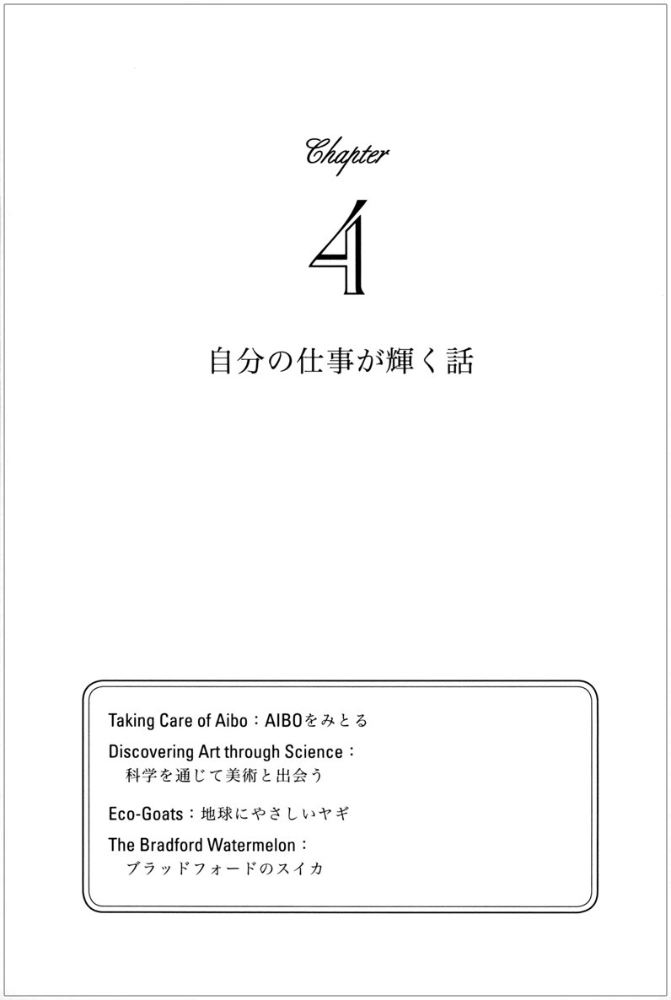
DL14_Taking Care of Aibo
愛と死
Taking Care of Aibo
AIBOをみとる
犬型ロボットAIBOの発売から15年以上がたち、「未来」の電子ペットにも老いが訪れている。長年愛してきたAIBOをどのように延命させるか？ 無理であるなら、どのように葬儀を営むか？ これまで考えられもしなかった問題が、次々に起こり始めている......。
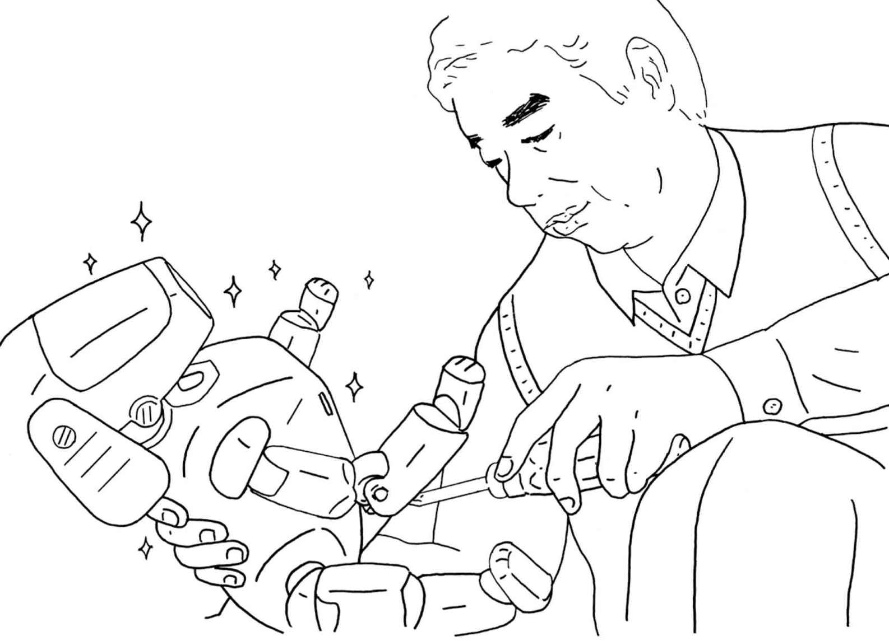
*1 Science-fiction stories have always asked questions about robots. Are they really alive? Do they have souls? Can we love them? In Japan, some of these questions are being answered in real life as people form true*2 emotional relationships with robots.
In 1999, Sony began selling Aibo, an*3 electronic pet with a personality like a small dog. Many people came to really love their*4 computerized pets. But for business reasons, Sony had to stop making them in 2006, and it stopped repairing them later. This is where Nobuyuki Norimatsu came in. After retiring from Sony in 2010, he opened a repair shop fixing old Sony equipment. As old Aibos began to break down, their owners came to Norimatsu, hoping he could "*5 heal" their "sick" pets.
*6 Bringing Aibos back to life became more than just a*7 fix-it business for Norimatsu. He says the owners are truly*8 emotionally attached to their Aibos. They feel that their Aibos have souls. And they treat Norimatsu like a doctor. His company receives messages from upset Aibo owners like this: "My sick mother*9 cherishes this Aibo. Isn't there anything you can do to fix it?"
One owner seeking repairs wrote emails*10 in the voice of her sick electronic pet: "Do I*11 have no choice but to die like this because I can't walk?" It's not unusual for Norimatsu's Aibo "hospital" to receive phone calls from customers who cry as they thank him for bringing a*12 treasured family member back to "life" and "health."
Sony sold about 150,000 Aibos. As time goes by, they get what their owners call "*13 aching joints" and other problems that come naturally with age. Norimatsu does what he can, but spare parts can only come from "dead" Aibos now. At Norimatsu's hospital, the need is great, and waiting lists are long. Norimatsu and his workers know that the Aibo is plastic and metal, but they respond to customers' needs with*14 compassion.
Still, Norimatsu can't save every electronic life, and for every Aibo, there is a time to die. Bungen Oi, a priest at the 450-year-old Kofukuji Temple in Isumi, Chiba, has provided*15 funeral services for many Aibos and their human families. He says the ceremonies, similar to pet funerals, help the animals' souls to pass from their bodies.
It would be easy to*16 laugh this off as a*17 passing*18 fad. But it is not passing. In their way, Norimatsu and Oi are men of the future. People feel real love for their Aibos, and much more emotionally*19 sophisticated robots are already in use. People will form even closer relationships with human-like robots than they did with Aibos. When that happens, more people like Norimatsu and Oi will likely be needed. And real life will answer more science-fiction questions.
455 words
The point of this story
DLMP3_14
When Nobuyuki Norimatsu started a business repairing old*20 electronics, he didn't think of it as a science-fiction adventure. But then he began repairing "sick" Aibo electronic pets. As in science-fiction stories, his customers have real loving relationships with their robots. To many Aibo owners, Norimatsu is not just a repairman but a*21 compassionate*22 healer. He belongs to the first generation of humans who have real emotional relationships with robots.
SF小説は常にロボットに関する疑問を投げ掛けてきました。彼らは本当に生きているのか？ 魂はあるのか？ われわれ人間が彼らを愛することはできるのか？ 日本では、人々がロボットとの紛れもない気持ちのつながりを築いていく中、こうした疑問の幾つかに対し、現実社会で答えが出されようとしています。
1999年にソニーは、子犬のような性格の電子ペット、AIBOを発売しました。たくさんの人が、このコンピューターで動くペットを非常に愛するようになりました。しかし、ビジネス上の理由でソニーは、2006年にその生産を停止しなければならなくなり、後に修理もやめました。そこに登場したのが乗松伸幸さんです。2010年にソニーを退社した後、彼は、古いソニー製品を直す修理店を開きました。古くなったAIBOが故障し始めると、飼い主は、自分たちの「病気になった」ペットを「治療」してもらいたいと、乗松さんの元を訪れました。
乗松さんにとって、AIBOをよみがえらせることは単なる修理業以上のことになりました。飼い主たちは自分たちのAIBOに、まさに心からの愛着を感じていると彼は言います。彼らはAIBOに心があると感じているのです。ですから、飼い主たちは乗松さんを医者として遇します。彼の会社には、動揺したAIBOの飼い主からこんな便りが届きます。「病気の母は、このAIBOをかわいがっています。どうにかして直していただけないでしょうか？」と。
修理を求めてきたある飼い主は、具合の悪い電子ペットを代弁したメールを書きました。「歩けなくなったからって、僕はこんなふうに死んでいくしかないの？」と。乗松さんのAIBO「病院」では、大切な家族の一員に「命」と「健康」を取り戻してくれたことを、泣きながら感謝する顧客からの電話がかかってくることも珍しくありません。
ソニーは約15万体のAIBOを販売しました。時がたつにつれ、それらは、飼い主が呼ぶところの「関節痛」や、経年によって自然に起こるその他の問題を抱えるようになっています。乗松さんもできる限りのことはしますが、今や交換部品は「亡くなった」AIBOからしか得られません。乗松さんの病院では、その需要は高く、順番待ちリストが長くなっています。乗松さんと彼の社員たちは、AIBOがプラスチックと金属でできていると知っているものの、彼らは顧客の気持ちに寄り添いながら要望に応えています。
それでも、乗松さんが全ての電子生命を救えるわけではなく、また、どんなAIBOにも終わりの時は来ます。千葉県いすみ市にある450年の歴史を持つ光福寺の僧侶、大井文彦さんは、たくさんのAIBOとその人間の遺族のために、葬儀を営んできました。こうした儀式は、ペット葬儀と同様に、動物たちの魂が体から離れる手助けをするのだと、彼は言っています。
一時的な流行としてこれを笑い飛ばすのは簡単かもしれません。けれども、これは一時的なことではないのです。彼らなりのやり方で、乗松さんも大井さんも、未来を生きる人たちです。人々はAIBOに真の愛情を感じていますし、情緒面でずっと高い機能を備えたロボットも既に実用化されています。人間はヒト型ロボットを相手に、AIBOよりもさらに親密な関係を築くことでしょう。そうなれば、乗松さんや大井さんのような人たちがもっと必要とされるのではないでしょうか。そして、SFの疑問に対して、現実社会からもっと答えが出されることでしょう。
このストーリーのポイント
乗松伸幸さんが古い電子機器を修理する会社を始めた時、それがSFアドベンチャーのようなものであるとは思っていませんでした。しかし、その後「病気にかかった」電子ペットのAIBOを修理するようになったのです。SF小説のように、顧客たちはロボットに心から愛情を感じています。多くのAIBOオーナーにとって、乗松さんは単なる修理屋ではなく、思いやりのあるお医者さんなのです。ロボットと本当に感情のこもった関係を結んだ人類最初の世代に、乗松さんは属しているのです。
*1 science-fiction：SFの
*2 emotional：感情の、情緒的な
*3 electronic：電子（装置）の
*4 computerized：コンピューター制御の、コンピューターで動く
*5 heal：...を治療する
*6 bring ... back to life：...をよみがえらせる
*7 fix-it：修理の、修繕の
*8 emotionally：感情的に、気持ちの上で
*9 cherish：...を大事にする
*10 in the voice of ...：...を代弁して
*11 have no choice but to ...：...するほかに選択の余地がない、...するしかない
*12 treasured：貴重な、大切な
*13 aching joint：関節痛
*14 compassion：思いやり、共感
*15 funeral service：葬儀
*16 laugh ... off：...を笑い飛ばす、...を一笑に付す
*17 passing：一過性の、一時的な
*18 fad：一時的流行、気まぐれ
*19 sophisticated：洗練された、高機能な
*20 electronics：電子機器、電子装置
*21 compassionate：思いやりのある、心のこもった
*22 healer：治療者、医者
DL15_Discovering Art through Science
科学と芸術
Discovering Art through Science
科学を通じて美術と出会う
芸術に関心がなかったヘンリー・デフィリップスが美術にはまるきっかけを作ったのは、小さな絵の具のかけらだった。長年の化学研究で得た知識は、これまでとは全く違う絵の見方を彼に、そして、美術関係者にもたらし始めた......。
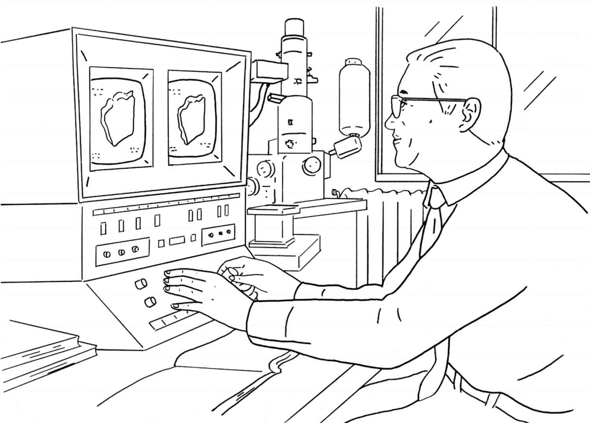
In 1959, on Henry DePhillips'*1 honeymoon to France and Italy, his art-major wife*2 dragged him along to many art museums. A scientist, he found the museums very boring. He discovered his interest in art almost by accident.
In the 1980s, a friend with whom he played tennis asked him if he would test the chemical composition of something for him. It happened to be a Van Gogh painting. The friend was the chief*3 conservator at the Wadsworth Atheneum Museum of Art in Connecticut, which owned the painting. Some people had said that they thought it was a*4 fake.
DePhillips was surprised at how small the paint samples were that he received, but his friend explained that when you have a $3 million work of art, you*5 chip off the smallest piece possible. Testing showed that the materials used were the same kinds that Van Gogh would have had. His friend was satisfied. And DePhillips was*6 hooked.
He changed the*7 focus of his work completely. He had*8 previously spent 25 years studying the*9 proteins in*10 snails,*11 lobsters and*12 squid. Much of the work that he does now*13 involves helping*14 art restorers. Once they know the materials used, it becomes much easier to*15 accurately clean a painting and brighten it, bringing it back to its original beauty.
DePhillips also acts as a kind of art*16 detective, helping collectors determine whether an*17 artwork is real. He also kept the Atheneum from buying a painting that was supposed to be by French painter James Tissot, when DePhillips found small amounts of*18 titanium dioxide in the paint. Titanium dioxide was not used in paints until the 1920s, and Tissot died in 1902.
Art*19 forgery is a 6-billion-dollar-a-year business, and the artists who make fake paintings are very*20 skillful. An FBI agent once told DePhillips that about 25 percent of all works of art in museums are forgeries. In private collections, the*21 estimate is 40 percent.
DePhillips taught*22 chemistry at Trinity College in Connecticut for more than 40 years. Throughout the second half of his teaching career, he focused on teaching students*23 art conservation techniques. He always had a long waiting list for his class "Science and Art."
He is retired now, but DePhillips still continues to*24 mentor chemistry majors in these techniques. Students learn to test paints that they have mixed themselves. Next they study older paint samples whose composition they already know. Only then do they begin to*25 analyze unknown samples and paintings.
His work ─ at the*26 crossroads of science and art ─ "has*27 transformed my life and it has transformed my wife's life," he says.*28 Nowadays it is DePhillips who drags his wife along to art museums.
446 words
The point of this story
DLMP3_15
Saying yes to friends can sometimes be a very good idea. It was for Henry DePhillips, who changed his life completely after agreeing to do a favor for a friend and look at the chemical composition of an artwork for him. DePhillips, who had never cared much about art before, suddenly saw the science in art and found a way to love paintings. He dedicated the rest of his career to analyzing the materials used in works of art, to assisting with the work of cleaning and restoring and to confirming whether paintings are*29 authentic. DePhillips has gone on to influence*30 numerous students at the college where he taught, helping them to find the common areas between art and science.
1959年のフランスとイタリアへの新婚旅行で、ヘンリー・デフィリップスは美術専攻だった新妻に、数々の美術館へと連れ回されました。科学者だった彼にとって、美術館はとても退屈でした。そんな彼が、美術に興味を見い出したのは、ほとんど偶然からでした。
1980年代に、テニス仲間の一人が、化学成分を調べてほしいものがあると頼んできました。思い掛けないことに、それはファン・ゴッホの絵だったのです。その絵は、友人が主任保存管理者をしていた、コネチカット州のワーズワース・アセニウム美術館の所蔵品でした。しかし、それは偽作だと思うと言っている人たちもいたのです。
絵の具の試料を受け取ったデフィリップスは、そのあまりの少なさに驚きました。しかし、300万ドルの美術品では、できる限り小さなかけらを削り落とすようにしなければならないのだと、その友人は説明しました。試験の結果、使用された材料はファン・ゴッホが使ったであろうものと同じ種類だと分かりました。友人は結果に満足しました。そして、デフィリップスは夢中になってしまいました。
彼は、仕事の中心を完全に変えました。それまでの25年間、カタツムリ、ロブスターやイカのタンパク質を研究してきました。それが、今では彼の仕事の多くは、美術修復家を助けるためのものとなりました。使用されている材料が判明すれば、絵画を的確な方法で洗浄して鮮やかにし、元の美しさを取り戻すことが、はるかに簡単になります。
デフィリップスはまた、いわば美術探偵のように、収集家が美術品の真贋を見極める手助けをしています。アセニウム美術館がフランスの画家、ジェームズ・ティソによるとされる絵を購入しようとしていた時、絵の具に微量の二酸化チタンを発見して、それを止めさせたこともあります。1920年代まで、絵の具にチタンは使われませんでした。そして、ティソが死んだのは1902年でした。
美術品偽造は年間60億ドルのビジネスで、偽物の絵画を製作するアーティストは、とても巧みです。デフィリップスはあるFBI捜査官から、美術館の全美術作品の約25パーセントが偽物である、と聞いたことがあります。プライベートコレクションでは、40パーセントと推定されます。
デフィリップスはコネチカット州のトリニティ・カレッジで40年以上、化学を教えました。教職の後半の年月は、美術保存技術を重点的に教えました。その科目、「科学と美術」は、常に長い順番待ちリストができるほどの人気でした。
デフィリップスは引退した今も、化学専攻の学生にこうした技術について指導を続けています。学生たちはまず、自分で混ぜた絵の具を使って、試験の方法を学びます。次に、すでに化学成分が分かっている、古い絵の具の試料を研究します。そうした過程をへて初めて、未知の試料や絵画の分析に着手するのです。
科学と美術の交差点ともいえる彼の仕事が、「自分の人生を変えたのはもちろん、妻の人生も変えましたよ」と、デフィリップスは語ります。今ではデフィリップスの方が、妻を美術館へと連れ回すのだそうです。
このストーリーのポイント
友達の頼みごとを引き受けることは、とても良い結果になることがあります。ヘンリー・デフィリップスの場合がまさにそうでした。友人の頼みごとを引き受けて美術品の化学成分を調べてから、人生がすっかり変わってしまったのです。美術にはさして興味のなかったデフィリップスが、突然そこに科学を見出し、自分なりに絵画を愛するようになりました。それからのキャリアを、美術品に使われる材料を分析したり、作品の洗浄や修復作業の手助けをしたり、絵画の真贋を確認したりすることに捧げました。デフィリップスは教えていた大学で多くの学生に影響を与え、美術と科学が交わる領域を見つけるよう、彼らを導いたのです。
*1 honeymoon：新婚旅行
*2 drag：...を連れ回す、...を引きずり込む
*3 conservator：保存管理者、修復管理者
*4 fake：偽作、偽物
*5 chip off ...：...を削り落とす、...を削り取る
*6 hooked：夢中になって、とりこになって
*7 focus：中心、焦点
*8 previously：それまでは、以前は
*9 protein：タンパク質
*10 snail：カタツムリ
*11 lobster：ロブスター
*12 squid：イカ
*13 involve：...に関わる、...に関係する
*14 art restorer：美術修復家
*15 accurately：的確に、正しく
*16 detective：探偵、刑事
*17 artwork：美術品
*18 titanium dioxide ：二酸化チタン（「チタン白」という白色顔料として多用されている）
*19 forgery：偽造、ねつ造
*20 skillful：巧みな、腕のいい
*21 estimate：推定、見積もり
*22 chemistry：化学
*23 art conservation：美術保存
*24 mentor：指導する、助言する
*25 analyze：分析する
*26 crossroads ：交差点
*27 transform：変える
*28 nowadays：今では
*29 authentic：本物の、正真正銘の
*30 numerous：多数の
DL16_Eco-Goats
古くて新しい仕事
Eco-Goats
地球にやさしいヤギ
「経験不問、食事保証、ただし休憩時間なし」。怪しげな企業の求人広告のようだが、ヤギの生態を上手に生かしたビジネスが注目を集めている。顧客、企業、環境の全てに有益なこのビジネスは、ヤギを手放したくないという思いから生まれたのだった......。
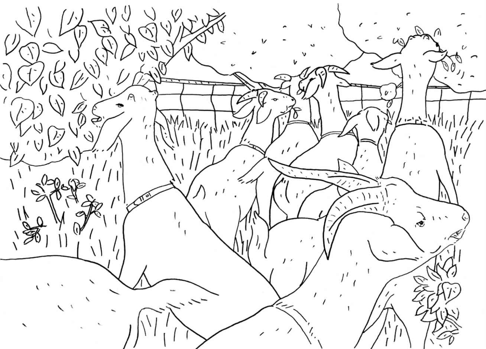
A chance encounter with a friend who kept goats ended up giving Brian Knox an idea for a new company. The friend, Richard Garden, mentioned to Knox that he had gotten to know all of his goats well and he really did not want to sell them for meat. Knox wanted to help his friend come up with a plan that would help him keep his goats.
Knox was a*1 forester and knew a lot about land. After learning about some programs in the western part of the United States that used goats to clear land, they decided to work together to try renting out the goats to help people clear properties that had become*2 overgrown with*3 vegetation.
Goats have strong stomachs, and they can eat*4 greenery, including*5 invasive species, that would be*6 poisonous for people.*7 Kudzu taking over your trees? No problem. Goats also*8 chew through*9 poison ivy without getting sick. Moreover they can reach narrow spots where*10 lawn mowers cannot.
Goats do not leave any*11 harmful chemicals behind. They do leave some natural*12 fertilizer, but this is a*13 bonus. Their waste is*14 trampled into the ground and turns into rich soil that helps plants to*15 thrive. The one plant that goats don't like to eat is grass. A field will remain green even with many hungry goats in it!
The company, Eco-Goats, is based in Maryland, but Knox travels to Virginia, West Virginia, Pennsylvania and New York in the summer, taking his goats from location to location.
Based on the job, Knox decides how much time and how many goats will be needed. He takes and sets up the*16 electric fencing that keeps the goats in one area. The goats*17 work around the clock until the job is done. A staff member visits once a day to make sure everything is going smoothly. When finished, Knox removes both the goats and the fencing.
Knox's goats have been used to clear areas as small as a 12 by 60 foot (3.7 by 18 meter) backyard and as large as a 20,000*18 acre (8,094-hectare) field. And they don't take long to do it. For example, according to the Eco-Goats website, 30 of the company's goats took 48 hours to clear a 0.3 acre (1,214 square meter) neighborhood property. Fifty goats took 12 days on a 4-acre (1.6-hectare) property covered with thick forest growth.
Knox listens to what customers need and tells them, first of all, whether goats will work for them. He then*19 customizes his response ─ the number of goats and length of time ─ for each job.
Goats may be more expensive than simple*20 weed killers, but they are better for the environment. They actually help the environment, rather than hurt it.
Goat*21 landscaping is becoming a popular*22 alternative for clearing land. Companies like Google and Yahoo have used it, as have some city and state governments. Could it be the wave of the future?
487 words
The point of this story
DLMP3_16
Sometimes the most brilliant ideas are also the most traditional. With Eco-Goats, Knox found a way to bring*23 time-proven farming techniques into the modern world. His is a win-win-win*24 solution, benefiting customers, his company and the environment. This use of goats is becoming popular across the country, and there are now a number of other goat*25 rental companies, including Rent A Goat, Billy Goat Landscaping and The Green Goat.
ヤギを飼っていた友人との偶然の出会いが、ブライアン・ノックスに新しい会社についてのアイデアをもたらしました。友人のリチャード・ガーデンが、それぞれのヤギを良く知るようになった結果、食肉用に売るのが嫌になったと、ノックスに言ったのです。ノックスはこの友人のため、ヤギを手放さずに済む方法を一緒に考えたいと思いました。
ノックスは森林監督官をしていて、土地について精通していました。二人はヤギを整地に使うというアメリカ西部の計画を知って、草木が伸び放題になった土地を除草するのに協力する目的で、一緒にヤギを貸し出してみようと決めました。
ヤギは胃が丈夫で、人々にとって有毒な侵入種をはじめとする草木を食べることができます。葛が木を覆っているって？ 大丈夫。ヤギはまた、ツタウルシを食べても病気になりません。さらには、芝刈り機が入り込めないような狭い場所にも、ヤギなら行けます。
ヤギは、有害な化学物質を一切残しません。天然の肥料は多少残していきますが、これはおまけです。ヤギの糞は踏みつけられて土に混じり、土壌を豊かにして植物の生育を助けてくれます。唯一ヤギが食べたがらない植物が、何と芝なのです。お腹をすかせたヤギがたくさんいても、野原は青々としたままです！
この会社、エコ・ゴートはメリーランド州を本拠地としていますが、ノックスは夏の間、バージニア州、ウエストバージニア州、ペンシルベニア州、ニューヨーク州の各地を、ヤギを連れて出張して回ります。
依頼された仕事に応じて、ノックスは必要とされる時間とヤギの数を決めます。通電フェンスを持っていって設置し、ヤギがその場所から出ないように囲います。仕事が終わるまで、ヤギは休みなく働いてくれます。１日１回、スタッフが現地に行き、すべてがうまく進んでいることを確認します。終了したら、ノックスはヤギとフェンスを持ち帰ります。
これまでにノックスのヤギたちは、縦12フィート横60フィート（縦3.7メートル横18メートル）の小さな裏庭から、２万エーカー（8,094ヘクタール）の広大な野原まで、さまざまな場所を除草してきました。それも、時間をさほどかけずにです。エコ・ゴートのウェブサイトによると、例えば0.3エーカー（1,214平方メートル）のまとまった土地の場合、同社の30頭のヤギが48時間で除草したとのことです。森の植物がぎっしり繁殖していた４エーカー（1.6ヘクタール）の土地を、50頭が12日間できれいにしたこともあるそうです。
ノックスは顧客のニーズに耳を傾け、まず、ヤギがそのニーズに応えられるかどうかを話します。次に個々の仕事に対し、必要とされるヤギの数や所要時間をカスタマイズして回答します。
手軽な除草剤に比べると、ヤギは割高かもしれませんが、環境に良いことは確かです。環境を損なうどころか、改善する一助となるのですから。
ヤギを使った整地は、新たな可能性がある整地法として人気が高まっています。グーグルやヤフーといった企業や、市や州政府にも利用されてきました。もしかしたら、これから大きな波になるかもしれません。
このストーリーのポイント
最も優れたアイデアは、時として最も伝統的なものでもあります。ノックスはエコ・ゴートで、時の試練を経た農業の手法を、現代社会に生かす方法を見い出しました。顧客、会社、環境の全てに有益な、満足できる解決法です。こうしたヤギの利用はアメリカ全土で人気が出ており、今ではレント・ア・ゴート、ビリー・ゴート・ランドスケーピング、ザ・グリーン・ゴートなど、ヤギのレンタル会社が多数生まれています。
*1 forester：森林監督官
*2 overgrown：（草木が）伸び放題になった、はびこった
*3 vegetation：草木、植物
*4 greenery：草木
*5 invasive species：侵入種
*6 poisonous：有毒な、有害な
*7 kudzu：葛（明治時代に日本からアメリカにもたらされ、現在、侵入種として問題になっている）
*8 chew：かむ
*9 poison ivy：ツタウルシ（触るとひどくかぶれる場合がある）
*10 lawn mower：芝刈り機
*11 harmful：有害な
*12 fertilizer：肥料
*13 bonus：おまけ、思わぬめぐみ
*14 trample：...を強く踏みつける
*15 thrive：生育する
*16 electric fencing：通電フェンス
*17 work around the clock：休みなしで働く
*18 acre：エーカー（約4,047平方メートル）
*19 customize：カスタマイズする
*20 weed killer：除草剤
*21 landscaping：整地、造園
*22 alternative ：代替手段、別の可能性
*23 time-proven：実績のある、時の試練を経た
*24 solution：解決法、解答
*25 rental：レンタルの、賃貸業の
DL17_The Bradford Watermelon
伝統と世界経済
The Bradford Watermelon
ブラッドフォードのスイカ
19世紀、史上最高とも言われたブラッドフォードのスイカ。しかし、時代の変化の中で生産量が減少、20世紀半ばには「幻」のスイカになってしまった。それをよみがえらせようという１人の学者の調査は、予期せぬ展開をもたらしたのだった......。
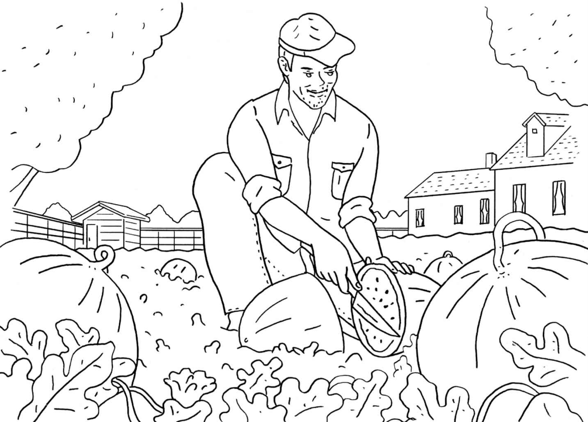
This story begins in 1783, during*1 the American War of Independence. The British*2 captured American soldier John Franklin Lawson, and put him in a*3 prison ship. On the ship, he was given a piece of watermelon. It was so delicious that he saved all the seeds. After the war, he came home to Georgia and planted the seeds. Now he could enjoy not just the freedom of his new country but also those wonderful melons.
In 1840, a farmer in South Carolina named Nathaniel Napoleon Bradford crossed Lawson's melon with another. The result was so*4 fragrant, delicious and sweet that many melon lovers believed it to be the best watermelon ever. The Bradford watermelon became so valuable that farmers had to protect it with traps and guns.
But the Bradford was soft. It couldn't be put in large boxes or carried to far-away markets. During the 20th century, Americans developed advanced farming and*5 transportation systems to support their growing country. To make money, farmers needed hard,*6 durable melons. Many of the most delicious foods ─ like the Bradford ─ didn't fit into the new system of*7 coast-to-coast railways and truck routes. By the 1920s, the Bradford watermelon was just an old memory from simpler times.
To David Shields, a food*8 historian at the University of South Carolina, this was a*9 tragedy. His*10 mission in life is to find lost food traditions of the South and bring them back to life. In 2005, he started searching for the Bradford. Like a*11 detective hunting for*12 clues, he hunted for information, stories, seeds, and people named Bradford ─ anything related to the Bradford watermelon. For seven years, he followed many bad leads and*13 dead ends. There was very little hope, and the Bradford seemed to be lost forever.
Then, one day, he received an email from a South Carolina man named Nat Bradford. The man had some interesting watermelons in his yard, and his family had a traditional way of growing them. Bradford wanted to try farming and was asking for advice and information from Shields.
Shields did more research, and found that Nat Bradford was, in fact, an eighth-generation*14 descendant of Nathaniel Napoleon Bradford. The real Bradford watermelon was alive and well in Nat's garden! With help from Shields, Nat Bradford began farming the melon and increasing production. Since then, his farm has produced thousands of the delicious melons.
But the story doesn't end there. It began with the use of watermelon to relieve a thirsty prisoner. In that spirit, Nat set up a charity called Watermelons for Water, which sends his seeds to areas of the world where fresh water is scarce. Also, some of the money from Bradford's online sales helps farmers dig wells. Tanzania has already raised its first crop of Bradford watermelons.
491 words
The point of this story
DLMP3_17
The story of the Bradford watermelon reflects the ways in which America feeds itself. The story begins with a soldier carrying seeds home from war. It moves on to the 19th century technology of breeding new plants, then to the 20th century loss of old traditions and their 21st century rediscovery. For historian David Shields and farmer Nat Bradford, it's a story of lost treasure found and the sweet taste of success, which Bradford shares with the world.
この物語は、アメリカ独立戦争中の1783年に始まります。イギリス軍は、ジョン・フランクリン・ローソンというアメリカ兵を捕らえ、捕虜輸送船に乗せました。船上で彼は、スイカを一切れ与えられました。そのスイカがあまりにおいしかったので、ローソンは種を全部とっておきました。戦後、彼はジョージア州の自宅に戻り、その種を植えました。新しく誕生した国での自由に加えて、あの素晴らしいスイカも楽しめるようになりました。
1840年に、サウスカロライナ州のナサニエル・ナポレオン・ブラッドフォードという農夫が、ローソンのスイカを他の品種と交配しました。そうしてできたスイカはとても香りがよく、おいしく、甘かったため、スイカ愛好家の多くが、間違いなく史上最高のスイカだと思いました。ブラッドフォードのスイカはあまりに高価になったため、農夫たちは、わなや銃で守らなければならないほどでした。
ところが、ブラッドフォードのスイカは柔らかかったのです。大きな箱に詰めたり、遠方の市場に輸送したりすることができませんでした。20世紀の間、アメリカは先進的な農業と輸送システムを開発して、成長する国を支えました。農家が収入を得るためには、硬くて長持ちするスイカが必要とされました。ブラッドフォードのスイカのような一番味の良い食べ物の多くは、大陸横断の鉄道やトラックのルートを使った新しいシステムに適していなかったのです。1920年代までには、ブラッドフォードのスイカは、素朴な時代の懐かしいものにすぎなくなっていました。
サウスカロライナ大学の食物史学者、デビッド・シールズにとって、これは悲劇でした。シールズの人生の使命は、南部の失われた伝統的な食物を見つけてよみがえらせることです。2005年に、彼はブラッドフォードのスイカを探し始めました。手掛かりを求める探偵のように、情報、話、種、そしてブラッドフォードという姓の人物、すなわちブラッドフォードのスイカに関係するありとあらゆるものを探しました。７年もの間、数多くの間違った手掛かりや袋小路を追うばかりでした。希望はほんのわずかしかなく、ブラッドフォードのスイカは永遠に失われたかのようでした。
そんなある日、サウスカロライナ州のナット・ブラッドフォードという男性から、１通のメールが届きました。自宅の庭に面白いスイカがあって、一家に代々伝わる育て方があるというのです。ナット・ブラッドフォードはこのスイカを栽培してみたいと考えており、シールズにアドバイスと情報を求めていました。
シールズがさらに調査した結果、ナット・ブラッドフォードは、実は、ナサニエル・ナポレオン・ブラッドフォードの８代目の子孫であることが判明しました。本物のブラッドフォードのスイカが、ナットの庭で元気に生きていたのです！ シールズの助けを得て、ナット・ブラッドフォードはスイカ栽培を始め、生産量を増やしました。それ以来、彼の農場は、何千ものおいしいスイカを生産してきました。
ところがお話はここでは終わらないのです。このお話は、捕虜の喉の渇きをうるおすために、スイカを使ったところから始まりました。その精神にのっとって、ナットは「水代わりにスイカを」という慈善事業を起こしました。この事業は、新鮮な水が乏しい世界の地域に、スイカの種を送るというものです。また、ブラッドフォードのオンライン販売の収益の一部は、農家が井戸を掘るのに役立てられています。タンザニアでは、すでに最初のブラッドフォードのスイカが収穫されました。
このストーリーのポイント
ブラッドフォードのスイカの話には、アメリカの食糧事情が反映されています。この話は、兵士がスイカの種を戦争から家に持ち帰るところから始まります。次に19世紀の新しい植物の交配技術に移り、20世紀の昔ながらの伝統の喪失、21世紀の再発見へとつながります。歴史学者のデビッド・シールズと、農業を営むナット・ブラッドフォードにとっては、失われた宝物が見つかった話と言えます。その甘い成功の味を、ブラッドフォードは世界と分かち合っているのです。
英語でやる気が出る仕事の話（電子書籍版）
発行日：2015年12月1日（Ver.1.0）
企画：株式会社アルク 英語出版編集部
やる気が出る仕事の話製作委員会
収録英文リサーチ：佐々木順子
英文リライト：Elizabeth Floyd Mair、Braven Smillie
翻訳：佐々木順子、挙市玲子
校正：Peter Branscombe、Margaret Stalker、玉木史惠
表紙デザイン：岡 優太郎（synchro design tokyo）
イラスト：石山好宏
ナレーション：Rachel Walzer、Bill Sullivan
録音・編集：株式会社 メディアスタイリスト
電子書籍制作：株式会社ジェイ エスキューブ
発行者：平本照麿
発行所：株式会社アルク
〒168-8611 東京都杉並区永福2-54-12
Email：csss@alc.co.jp
Website：http://www.alc.co.jp/
製品サポート：http://home.alc.co.jp/db/owa/usersupport/
・本書は『英語でやる気が出る仕事の話』（2015年9月初刷発行）を基に制作した電子書籍版です。
・本書の全部または一部の無断転載を禁じます。著作権法上で認められた場合を除いて、本書からのコピーを禁じます。
©2015 Yoshihiro Ishiyama / ALC PRESS INC.
PC：9580365
ISBN：9784757423756
If you have any questions regarding the copyright of these stories, please contact us.